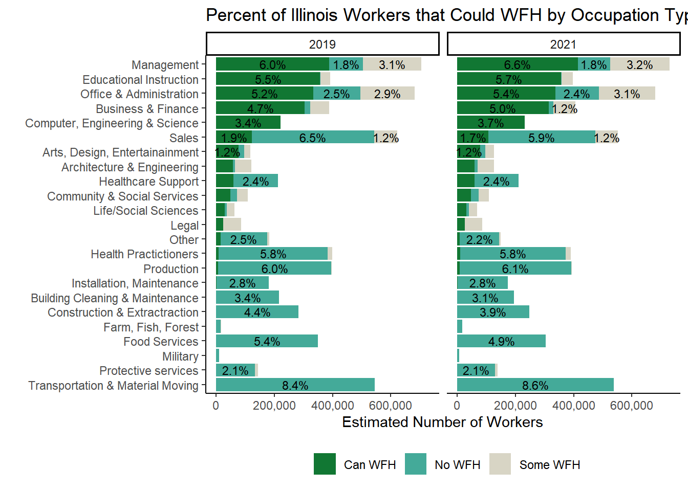

251630 observations originally in ACS 2021 and 2019 1-year samples.
123,753 observations after removing those not in the labor force and with earned incomes less than or equal to zero.
Note: Dropping groups of people using filter() from the sample will change the standard errors of estimates since it changes the sample size. Use the survey() or svy() command to drop subsets of people (like if we wanted to filter age groups). Google what commands to use to drop observations without impacting standard errors.
Code
# data %>% # group_by(YEAR, did_wfh) %>%# dplyr::summarize(weightedcount=sum(PERWT),# unweightedcount = n()) %>% #weighted# mutate(pct_weighted = round(weightedcount/sum(weightedcount), digits = 3),# pct_noweight = round(unweightedcount/sum(unweightedcount), digits = 3))#valid percent BEFORE final filtering of observations (income greater than zero)data %>%filter(YEAR ==2019) %>%topline(did_wfh_labels, weight = PERWT)data %>%filter(YEAR ==2021) %>%topline(did_wfh_labels, weight = PERWT)
18.2% of Illinois workers worked at home. 76.3% went to work using some form of transportation, 5.5% of observations were missing values.
Valid percent: 19.2% of observations with responses did WFH and 80.8% of observations with responses did not WFH. This is the statistic we would use
Increased from 5.3% of all workers that worked from home in 2019
3.1 Comparison of Women w/ & w/o Kids under 5
Women under 40 who could work from home in the occupation category with large amount of people who could work from home (Management, Business, Science & Arts, all SOC 2-digit codes < 30-0000)
Under5 is binary variable: 0 means no children under 5. 1 means at least 1 or more children under 5.
318,174 women in 2019 worked from home and 1,140,835 women in 2021 worked from home.
# t-test between with kids and without kids group. Weighted.# t-test probably isn't right because it isn't a continuous variable.# svyttest(under5~did_wfh, kidsdesign)#svytable(~did_wfh_labels+YEAR+under5, design = dstrata)svytable(~under5+did_wfh_labels, design = kidsdesign) %>%summary()
did_wfh_labels
under5 Did not WFH Did WFH
0 174904 91658
1 49846 29442
Pearson's X^2: Rao & Scott adjustment
data: svychisq(~under5 + did_wfh_labels, design = kidsdesign, statistic = "F")
F = 1.0905, ndf = 1, ddf = 3182, p-value = 0.2964
For men in 2019, 7.1% of men without kids worked from home. 7.6% of men with kids worked from home.
2019:
21.8% of men who did not WFH had kid under 5.
22.8% of men who did WFH had a kid under 5.
7.2% of men who did not have kids under 5 worked from home.
7.6% of men with kids under 5 worked from home.
In 2019:
22% of women who did not WFH had a kid under 5.
24% of women who did WFH had a kid under 5.
5% of women without children under 5 worked from home.
9% of women with children under 5 worked from home.
In 2021:|
21% of women who did not WFH had a kid under 5.
34% of women who did WFH had a kid under 5.
34% of women without children under 5 worked from home.
37% of women with children under 5 worked from home.
2021:
20.4% of men who did not work from home had kids under 5.
20.45% of men who did work from home had kids under 5.
40.45% of men without kids under 5 worked from home.
40.55% of men with kids under 5 worked from home.
Not a statistically significant difference but still interesting.
Design-based t-test
data: under5 ~ did_wfh
t = 1.6909, df = 3987, p-value = 0.09094
alternative hypothesis: true difference in mean is not equal to 0
95 percent confidence interval:
-0.004807002 0.065089151
sample estimates:
difference in mean
0.03014107
# t-test between with kids and without kids group. Weighted.# t-test probably isn't right because it isn't a continuous variable.# svyttest(under5~did_wfh, kidsdesign)#svytable(~did_wfh_labels+YEAR+under5, design = dstrata)svytable(~under5+did_wfh_labels, design = kidsdesign) %>%summary()
did_wfh_labels
under5 Did not WFH Did WFH
0 149045 101265
1 38192 26053
Pearson's X^2: Rao & Scott adjustment
data: svychisq(~under5 + did_wfh_labels, design = kidsdesign, statistic = "F")
F = 0.0012511, ndf = 1, ddf = 2729, p-value = 0.9718
Design-based t-test
data: under5 ~ did_wfh
t = 0.42896, df = 3490, p-value = 0.668
alternative hypothesis: true difference in mean is not equal to 0
95 percent confidence interval:
-0.02531256 0.03949063
sample estimates:
difference in mean
0.007089036
Call:
glm(formula = did_wfh ~ under5, data = childttest2021)
Coefficients:
Estimate Std. Error t value Pr(>|t|)
(Intercept) 0.392423 0.009225 42.540 <2e-16 ***
under5 -0.008596 0.018875 -0.455 0.649
---
Signif. codes: 0 '***' 0.001 '**' 0.01 '*' 0.05 '.' 0.1 ' ' 1
(Dispersion parameter for gaussian family taken to be 0.2380974)
Null deviance: 874.82 on 3675 degrees of freedom
Residual deviance: 874.77 on 3674 degrees of freedom
(103 observations deleted due to missingness)
AIC: 5160.7
Number of Fisher Scoring iterations: 2
Code
HHdesign <- survey::svydesign(id =~CLUSTER, strata =~STRATA, weights =~HHWT, data = joined)table <-svytable(~YEAR+HHincdecile_w+did_wfh_labels, design = HHdesign) table <- table %>%as_tibble() %>%group_by(YEAR,HHincdecile_w)%>%mutate(Prop=round(n/sum(n), digits=3)) %>%filter(did_wfh_labels =="Did WFH")table # has proportions calculated out of TOTAL for both years
Code
table %>%ggplot(aes(factor(HHincdecile_w, levels =c(1,2,3,4,5,6,7,8,9,10), labels =c("Bottom 10%", "20%", "30%", "40%", "50%", "60%", "70%", "80%", "90%", "Top 10%")), y=Prop, fill = YEAR, group =factor(YEAR, levels ="2021","2019"))) +geom_col(stat="identity", position ="dodge")+#geom_col(stat = "identity", position = "stack") + # scale_x_discrete(limits = c("Bottom 10%", "20%", "30%", "40%", "50%", "60%", "70%", "80%", "90%", "Top 10%"))+# facet_wrap(~YEAR)+coord_flip()+geom_text(aes(label = scales::percent(Prop, accuracy =0.1L)), position =position_dodge(width =0.8), hjust =1.1,size =4) +labs(title ="Percent of each HOUSEHOLD income decile that did WFH",subtitle ="2019 vs 2021",caption ="ACS 1 year samples for 2019 and 2021. Working from home based on TRANWORK question on commuting and HHINCOME variable. All workers in the labor force, all ages included. Income based on HHINCOME for household income of survey respondents.", x="Income Deciles", y ="Percent of workers working from home") +theme(legend.position ="bottom", legend.title =element_blank())+theme_classic()+scale_fill_manual(values =c("#a6bddb", "#2b8cbe")) +scale_y_continuous(labels = scales::percent)
3.2 Individual Level Data
3.2.1 Occupations
Combined into 6 major occupation groups. Broadest categories are made up of multiple 2-digit OCCSOC codes.
Code
#table includes observations from BOTH years.#table(joined$occ_2dig_labels, joined$did_wfh_labels)#table(joined$occ_2digits)crosstab_3way(joined, YEAR, occ_2dig_labels, did_wfh_labels, weight = PERWT)
YEAR
did_wfh_labels
Management, Business, Science, Arts
Military
Natural Resources, Construction
Production, Transportation
Sales & Office Jobs
Service Occupations
n
2019
Did not WFH
40.1
0.16
7.49
14.9
20.1
17.3
5.85e+06
2019
Did WFH
55.3
0
4.34
4.72
23.1
12.6
3.18e+05
2021
Did not WFH
37.8
0.126
7.97
17
19.3
17.8
4.79e+06
2021
Did WFH
67.5
0.0353
2.05
3.82
20.8
5.79
1.14e+06
ACS 1 year samples for 2019 and 2021 used for weighted population estimates. Military occupations make up less than 0.5% of the labor force and were removed from the graph. Occupation categories are based on broadest aggregated BLS categories used by the BLS.
ACS 1 year samples for 2019 and 2021 used for weighted population estimates. Military occupations make up less than 0.5% of the labor force and were removed from the graph. Occupation categories are based on broadest aggregated BLS categories used by the BLS.
Code
table %>%filter(occ_2dig_labels !="Military") %>%ggplot(aes(x=fct_rev(fct_inorder(occ_2dig_labels)), y=n, group = YEAR)) +geom_col(stat ="identity", fill="lightblue") +facet_wrap(~YEAR)+geom_text(aes(label = scales::percent(as.numeric(ifelse(Prop>0.02,Prop, "")), accuracy = .1),accuracy = .1L ),position =position_stack(vjust=.5), size=3) +theme_classic() +theme(legend.position ="bottom", legend.title =element_blank())+labs(title ="Proportion of Occupation Types in Illinois",subtitle ="By Most Aggregated Occupation Groups used by BLS & ACS",x ="", y ="Estimated Number of Workers")+scale_y_continuous(labels = scales::comma)+scale_x_discrete(labels =function(x) str_wrap(x, width=25))+# makes labels better on axsiscoord_flip()
ACS 1 year samples for 2019 and 2021 used for weighted population estimates. Military occupations make up less than 0.5% of the labor force and were removed from the graph. Occupation categories are based on broadest aggregated BLS categories used by the BLS.
ACS 1 year samples for 2019 and 2021 used for weighted population estimates. Military occupations make up less than 0.5% of the labor force and were removed from the graph. Occupation categories are based on broadest aggregated BLS categories used by the BLS.
Code
### Proportion of All Workers in each Occupation Type ###table <-svytable(~YEAR+occ_2dig_labels_d, design = dstrata) table <- table %>%as_tibble() %>%group_by(YEAR)%>%mutate(Prop =round(n/sum(n), digits=3)) %>%arrange(-n)table
Figure 3.1: ACS 1 year samples for 2019 and 2021 used for weighted population estimates. Occupation categories based on first 2 digits of OCCSOC occupation codes. Labels for occupations that make up less than 2% of the workers were not labeled for legibility reasons.
Code
table %>%ggplot(aes(x=fct_rev(fct_inorder(occ_2dig_labels_d)), y=n, group = YEAR)) +geom_col(stat ="identity", fill="lightblue") +facet_wrap(~YEAR)+geom_text(aes(label = scales::percent(as.numeric(ifelse(Prop>0.02,Prop, "")), accuracy = .1),accuracy = .1L ),position =position_stack(vjust=.5), size=3) +theme_classic() +theme(legend.position ="bottom", legend.title =element_blank())+labs(title ="WFH Feasibility by Occupation Type",#subtitle = "Little change between 2019 and 2021 Occurred",x ="", y ="Estimated Number of Workers") +scale_y_continuous(labels = scales::comma)+coord_flip()### Percent of Workers working from home within each Broad Occupation type ###table <-svytable(~YEAR+did_wfh_labels+occ_2dig_labels, design = dstrata) table <- table %>%as_tibble() %>%group_by(YEAR, occ_2dig_labels)%>%mutate(Prop =round(n/sum(n), digits=3)) %>%arrange(did_wfh_labels, -n)table
Figure 3.2: ACS 1 year samples for 2019 and 2021 used for weighted population estimates. Occupation categories based on first 2 digits of OCCSOC occupation codes. Labels for occupations that make up less than 2% of the workers were not labeled for legibility reasons.
Code
table %>%filter(occ_2dig_labels !="Military" ) %>%ggplot(aes(x=fct_rev(fct_inorder(occ_2dig_labels)), y=n, fill = did_wfh_labels, group = YEAR)) +geom_col(stat ="identity", position ="stack") +facet_wrap(~YEAR)+geom_text(aes(label = scales::percent(as.numeric(ifelse(Prop>0.05,Prop, "")), accuracy = .1),accuracy = .1L ),position =position_stack(vjust=.5), size=3) +theme_classic() +theme(legend.position ="bottom", legend.title =element_blank())+labs(title ="Proportion of Workers in each Occupation Who Did WFH",subtitle ="Percentages add to 100% within each occupation",x ="", y ="Estimated # of People",caption ="ACS 1 year samples for 2019 and 2021 used for weighted population estimates. Military occupations were excluded from graph due to low occurance of observations.") +scale_y_continuous(labels = scales::comma)+scale_fill_manual(values =c("#a6bddb", "#2b8cbe")) +coord_flip()
Figure 3.3: ACS 1 year samples for 2019 and 2021 used for weighted population estimates. Occupation categories based on first 2 digits of OCCSOC occupation codes. Labels for occupations that make up less than 2% of the workers were not labeled for legibility reasons.
Figure 3.4: ACS 1 year samples for 2019 and 2021 used for weighted population estimates. Occupation categories based on first 2 digits of OCCSOC occupation codes. Labels for occupations that make up less than 2% of the workers were not labeled for legibility reasons.
Code
## Proportion of all workers in each occupation cateogory.## table <-svytable(~YEAR+did_wfh_labels+occ_2dig_labels, design = dstrata) table <- table %>%as_tibble() %>%group_by(YEAR)%>%mutate(Prop =round(n/sum(n), digits=3)) %>%arrange(did_wfh_labels, -n)table
Code
table %>%filter(occ_2dig_labels !="Military") %>%ggplot(aes(x=fct_rev(fct_inorder(occ_2dig_labels)), y=n, fill = did_wfh_labels, group = YEAR)) +geom_col(stat ="identity", position ="stack") +facet_wrap(~YEAR)+geom_text(aes(label = scales::percent(as.numeric(ifelse(Prop>0.02,Prop, "")), accuracy = .1), accuracy = .1L ),position =position_stack(vjust=.5), size=3) +theme_classic() +theme(legend.position ="none", legend.title =element_blank(), plot.title.position ="plot",panel.background =element_rect(fill='transparent'), #transparent panel bgplot.background =element_rect(fill='transparent', color=NA) #transparent plot bg )+labs(title ="Proportion of Illinois Workforce Who Worked From Home",# subtitle = "All workers in labor force with occsoc codes in a year add to 100%",x ="", y ="Estimated Number of Workers") +#,# caption = "ACS 1 year samples for 2019 and 2021 used for weighted population estimates,") scale_y_continuous(labels = scales::comma) +scale_x_discrete(labels =function(x) str_wrap(x, width=25))+# makes labels better on axsisscale_fill_manual(values =c("#a6bddb", "#2b8cbe")) +coord_flip()
table %>%ggplot(aes(x=fct_rev(fct_inorder(occ_2dig_labels_d)), y=n, fill = did_wfh_labels, group = YEAR)) +geom_col(stat ="identity", position ="stack") +facet_wrap(~YEAR)+geom_text(aes(label = scales::percent(as.numeric(ifelse(Prop>0.01,Prop, "")), accuracy = .1),accuracy = .1L ),position =position_stack(vjust=.5), size=3) +theme_classic() +theme(legend.position ="bottom", legend.title =element_blank())+labs(title ="Percent working from home by 2-digit Occupation type",x ="", y ="Estimated Number of Workers") +scale_y_continuous(labels = scales::comma)+scale_fill_manual(values =c("#a6bddb", "#2b8cbe")) +coord_flip()
ACS 1 year samples for 2019 and 2021 used for weighted population estimates. Graph interpretation: 3.6% of all worker in the labor force in 2021 were in Management occupations and worked from home. 8.3% of all workers were in management and did not work from home. Workers in Management occupations make up 11.9% of the entire workforce.
Code
# Both years, detailed observation typestable <-svytable(~YEAR+CanWorkFromHome+occ_2dig_labels_d, design = dstrata) table <- table %>%as_tibble() %>%group_by(YEAR)%>%arrange(CanWorkFromHome,-n) %>%mutate(Prop =round(n/sum(n), digits=3))table
Code
table %>%ggplot(aes(x=fct_rev(fct_inorder(occ_2dig_labels_d)), y=n, fill = CanWorkFromHome, group = YEAR)) +geom_col(stat ="identity", position ="stack") +facet_wrap(~YEAR)+geom_text(aes(label = scales::percent(as.numeric(ifelse(Prop>0.01,Prop, "")), accuracy = .1), accuracy=0.1L ),position =position_stack(vjust=.5), size=3) +theme_classic() +theme(legend.position ="bottom", legend.title =element_blank())+labs(title ="Percent of Illinois Workers that Could WFH by Occupation Type",x ="", y ="Estimated Number of Workers") +scale_y_continuous(labels = scales::comma)+scale_fill_manual(values =c( "#117733","#44AA99","#D8D5C5")) +coord_flip()

OCCSOC codes and Teleworkable scores from occupation characteristics. 11.6% of all workers in Illinois had management occupations (6.6 Can WFH + 1.8 No WFH + 3.2 Some WFH in 2021). 6.6% of all workers in Illinois had management occupations and could feasibly WFH. ACS 1 year samples for 2019 and 2021 used for weighted population estimates.
Code
table <-svytable(~YEAR+CanWorkFromHome+occ_2dig_labels_d, design = dstrata) table <- table %>%as_tibble() %>%filter(YEAR==2021)%>%arrange(CanWorkFromHome, -n) %>%mutate(Prop =round(n/sum(n), digits=3))table %>%ggplot(aes(x=fct_rev(fct_inorder(occ_2dig_labels_d)), y=n, fill = CanWorkFromHome, group=YEAR)) +geom_col(position="stack", stat ="identity")+geom_text(aes(label = scales::percent(as.numeric(ifelse(Prop>0.01,Prop, "")), accuracy = .1), accuracy=0.1L ), position =position_stack(vjust=.5), size=3) +theme_classic() +theme(legend.position ="bottom", legend.title =element_blank())+labs(title ="Percent of Workers that Could Feasibily Work From Home in 2021", x ="", y ="# of People",caption ="Occupation codes (OCCSOC)from the 2021 1-year ACS merged with work from home feasibility scores.") +scale_y_continuous(labels = scales::comma)+scale_fill_manual(values =c( "#2b8cbe","#a6bddb","gray80")) +coord_flip()
Code
## Proportion of all workers in each occupation cateogory.## table <-svytable(~YEAR+CanWorkFromHome+occ_2dig_labels, design = dstrata) table <- table %>%as_tibble() %>%group_by(YEAR)%>%mutate(Prop =round(n/sum(n), digits=3)) %>%arrange(CanWorkFromHome, -n)table
Code
Figure1 <- table %>%filter(occ_2dig_labels !="Military") %>%ggplot(aes(x=fct_rev(fct_inorder(occ_2dig_labels)), y=n, fill = CanWorkFromHome, group = YEAR)) +geom_col(stat ="identity", position ="stack") +facet_wrap(~YEAR)+geom_text(aes(label = scales::percent(as.numeric(ifelse(Prop>0.02,Prop, "")), accuracy = .1),accuracy = .1L ), position =position_stack(vjust=.5), size=2.5) +theme_classic() +theme(plot.title =element_text(hjust=0), legend.position ="bottom", # legend.title = element_text(text = "WFH Feasibility")# legend.title = element_blank() )+labs(title ="WFH Feasibility for Workers in Illinois by Broadest Occupation Categories",# subtitle = "All workers in labor force with occsoc codes in a year add to 100%",x ="", y ="Number of Workers in Illinois",# caption = "ACS 1 year samples for 2019 and 2021 used for weighted population estimates" ) +scale_x_discrete(labels =function(x) str_wrap(x, width=25))+# makes labels better on axisscale_y_continuous(labels = scales::comma) +scale_fill_manual(name ="WFH Feasibility", values =c( "#2b8cbe","#a6bddb", "gray89")) +coord_flip() # = element_text(hjust = 0, vjust=2.12))Figure1
## Totals add up to total number of workers in a yeartable <-svytable(~CanWorkFromHome+YEAR+did_wfh_labels, design = dstrata) # proportion of each respondant's sex and if they worked from home for each year in sampletable <- table %>%as_tibble() %>%group_by(YEAR)%>%# will divide by all workers per yearmutate(Prop =round(n/sum(n), digits=3)) %>%arrange(did_wfh_labels, -n)table
Percentages add up to 100 when adding all workers together within a year. Did work from home based on TRANWORK==80 variable from ACS surveys. Can Work from home based on teleworkable classification in Dingel & Niemen (2020). ACS 1 year samples for 2019 and 2021 used for weighted population estimates.
Code
## percentages add up to 100 when adding all workers together for a yeartable %>%ggplot(aes(CanWorkFromHome, y=n, fill = did_wfh_labels, group = YEAR)) +geom_col(stat ="identity", position ="stack") +facet_wrap(~YEAR)+geom_text(aes(label = scales::percent(Prop)), position =position_stack(vjust=.5), size=3) +#scale_fill_manual(values = c("#a6bddb", "#2b8cbe"))+theme_classic() +theme(legend.position ="none", legend.title =element_blank())+labs(title ="Did those who could work from home actually work from home?",subtitle ="2019 vs 2021",x ="", y ="Estimated Number of Workers") +scale_y_continuous(labels = scales::comma) +scale_fill_manual(values =c("#a6bddb", "#2b8cbe"))
Percentages add up to 100 when adding all workers together within a year. Did work from home based on TRANWORK==80 variable from ACS surveys. Can Work from home based on teleworkable classification in Dingel & Niemen (2020). ACS 1 year samples for 2019 and 2021 used for weighted population estimates.
table <-svytable(~CanWorkFromHome+YEAR+did_wfh_labels, design = dstrata) # proportion of each respondant's sex and if they worked from home for each year in sampletable <- table %>%as_tibble() %>%group_by(YEAR, CanWorkFromHome)%>%# divides by all workers per year within each categormutate(Prop =round(n/sum(n), digits=3)) %>%arrange(did_wfh_labels,-n)table
Code
xtabs(~did_wfh_labels+CanWorkFromHome+YEAR, data = dstrata)
, , YEAR = 2019
CanWorkFromHome
did_wfh_labels Can WFH No WFH Some WFH
Did not WFH 18433 30664 7094
Did WFH 1484 971 596
, , YEAR = 2021
CanWorkFromHome
did_wfh_labels Can WFH No WFH Some WFH
Did not WFH 13594 27599 5380
Did WFH 6217 2225 2370
Code
## percentages add up to 100 when adding all workers together for a yeartable %>%ggplot(aes(fct_inorder(CanWorkFromHome), y=n, fill = did_wfh_labels, group = YEAR)) +geom_col(stat ="identity", position ="stack") +facet_wrap(~YEAR)+geom_text(aes(label = scales::percent(Prop, accuracy =0.1L)), position =position_stack(vjust=.5), size=3) +theme_classic() +theme(legend.position ="bottom", legend.title =element_blank())+labs(title ="Did those who COULD work from home actually work from home:", subtitle ="2019 vs 2021",x ="", y ="# of People",caption ="Comparison graph that might feel more correct. Percentages add up to 100 when adding all workers within each CanWorkFromHome category for each a year. Did work from home based on TRANWORK==80 variable from ACS surveys. Can Work from home based on teleworkable classification in Dingel & Niemen (2020). ACS 1 year samples for 2019 and 2021 used for weighted population estimates.") +scale_y_continuous(labels = scales::comma)+scale_fill_manual(values =c("#a6bddb", "#2b8cbe"))
Code
table <- table %>%as_tibble() %>%group_by(YEAR, CanWorkFromHome)%>%# divides by all workers per year within each categorfilter(CanWorkFromHome !="Some WFH") %>%mutate(Prop =round(n/sum(n), digits=3)) %>%arrange(did_wfh_labels,-n)table
Code
xtabs(~did_wfh_labels+CanWorkFromHome+YEAR, data = dstrata)
, , YEAR = 2019
CanWorkFromHome
did_wfh_labels Can WFH No WFH Some WFH
Did not WFH 18433 30664 7094
Did WFH 1484 971 596
, , YEAR = 2021
CanWorkFromHome
did_wfh_labels Can WFH No WFH Some WFH
Did not WFH 13594 27599 5380
Did WFH 6217 2225 2370
Code
## percentages add up to 100 when adding all workers together for a yeartable %>%ggplot(aes(fct_inorder(CanWorkFromHome), y=n, fill = did_wfh_labels, group = YEAR)) +geom_col(stat ="identity", position ="stack") +facet_wrap(~YEAR)+geom_text(aes(label = scales::percent(Prop, accuracy =0.1L)), position =position_stack(vjust=.5), size=3) +theme_classic() +theme(legend.position ="bottom", legend.title =element_blank())+labs(title ="Did those who COULD work from home actually work from home:", subtitle ="2019 vs 2021",x ="", y ="# of People",caption ="Comparison graph that might feel more correct. Percentages add up to 100 when adding all workers within each CanWorkFromHome category for each a year. Did work from home based on TRANWORK==80 variable from ACS surveys. Can Work from home based on teleworkable classification in Dingel & Niemen (2020). ACS 1 year samples for 2019 and 2021 used for weighted population estimates.") +scale_y_continuous(labels = scales::comma)+scale_fill_manual(values =c("#a6bddb", "#2b8cbe"))
Code
# # table <- svytable(~CanWorkFromHome+YEAR+did_wfh_labels, design = dstrata) # # proportion of each respondant's sex and if they worked from home for each year in sample# table <- table %>% # as_tibble() %>% # group_by(YEAR, did_wfh_labels)%>% # divides by all workers per year within each categor# mutate(Prop =round(n/sum(n), digits=3))## percentages add up to 100 when adding all workers together for a year## Don't like this version of the graph #### table %>% ggplot(aes(did_wfh_labels, y=n, fill = CanWorkFromHome, group = YEAR)) + # geom_col(stat = "identity", position = "stack") +# facet_wrap(~YEAR)+# geom_text(aes(label = scales::percent(Prop)), position = position_stack(vjust=.5), size=3) +# theme_classic() + theme(legend.position = "bottom", legend.title = element_blank())+# labs(title ="Did those who COULD work from home actually work from home:", subtitle = "2019 vs 2021",# x = "", y = "# of People",# caption = "Comparison graph that might feel more correct.# Percentages add up to 100 when adding all workers within each did_wfh category for each a year.# Did work from home based on TRANWORK==80 variable from ACS surveys. Can Work from home based on teleworkable classification in Dingel & Niemen (2020).# ACS 1 year samples for 2019 and 2021 used for weighted population estimates.") + scale_y_continuous(labels = scales::comma)
Ideally switch order of categories so that Did WFH is on the bottom of stack. Allows easier visual comparison.
3.2.3 Creating Income Deciles
Code
# svyquantile shows the breaks for the quantiles. hypothetically uses weights of observations for calculation of deciles.# equal number of people should be in each decile after weights are applied inc_quantiles <- survey::svyquantile(~INCEARN, design=dstrata2019, quantiles =c(0,0.1,0.2,0.3,0.4,0.5,0.6,0.7,0.8,0.9,1) , na.rm=TRUE, ci =FALSE )# $INCEARN for 2019#[1,] 4 8000 16000 24000 30900 40000 50000 62000 80000 113000 933000# values not adjusted to 2021 values.inc_quantiles
# $INCEARN# [1,] 4 7200 16000 25000 34000 42000 52000 67000 85000 120000 949000breaks2019 <-c(7200, 16000, 25000, 34000, 42000, 52000, 67000, 85000, 120000)breaks2019adjusted <-c(8478, 16956, 25434, 32853, 42390, 52988, 65705, 84781, 120813) # from 2021 5 year sample and filtered for just 2019. # already adjusted for inflation.# included for comparison and to decide to use 5 year ACS or 2019 and 2021 1 year ACSbreaks2021 <-c(8000, 18000, 26000, 35000, 43000, 54000, 68000, 85000, 120000)# Code done above when creating variables in beginning chunks. # joined <- joined %>% # mutate(incdecile_w = case_when(# INCEARN < 8000 ~ 1, # INCEARN >= 8000 & INCEARN < 18000 ~ 2,# INCEARN >= 18000 & INCEARN < 26000 ~ 3,# INCEARN >= 26000 & INCEARN < 35000 ~ 4,# INCEARN >= 35000 & INCEARN < 43000 ~ 5,# INCEARN >= 43000 & INCEARN < 54000 ~ 6,# INCEARN >= 54000 & INCEARN < 68000 ~ 7,# INCEARN >= 68000 & INCEARN < 85000 ~ 8,# INCEARN >= 85000 & INCEARN < 120000 ~ 9,# INCEARN >= 120000 ~ 10)# )# number of observations in each decile after weights used for creating the income deciles#table(joined$incdecile_w)# no major differnce between years in who COULD work from home based on teleworkable codes. Makes sense. # ggplot(joined, aes(teleworkable, weight = PERWT)) +# geom_histogram()+facet_wrap(~YEAR)table <-svytable(~YEAR+incdecile_w+did_wfh_labels, design = dstrata) # proportion of each respondants sex in sampletable <- table %>%as_tibble() %>%group_by(YEAR,incdecile_w)%>%mutate(Prop=round(n/sum(n), digits=3)) %>%filter(did_wfh_labels =="Did WFH")table # has proportions calculated out of TOTAl for both years
Code
table %>%ggplot(aes(factor(incdecile_w, levels =c(1,2,3,4,5,6,7,8,9,10), labels =c("Bottom 10%", "20%", "30%", "40%", "50%", "60%", "70%", "80%", "90%", "Top 10%")), y=Prop, fill = YEAR, group =factor(YEAR, levels ="2021","2019"))) +geom_col(stat="identity", position ="dodge")+#geom_col(stat = "identity", position = "stack") + # scale_x_discrete(limits = c("Bottom 10%", "20%", "30%", "40%", "50%", "60%", "70%", "80%", "90%", "Top 10%"))+# facet_wrap(~YEAR)+coord_flip()+geom_text(aes(label = scales::percent(Prop, accuracy =0.1L)), position =position_dodge(width =0.8), hjust =1.1,size =4) +labs(title ="Working From Home by Earned Income Deciles",subtitle ="2019 vs 2021",# caption = "ACS 1 year samples for 2019 and 2021. Working from home based on TRANWORK question on commuting.# All workers in the labor force, all ages included.# Income based on INCEARN for total earned income of survey respondents.", x="Income Deciles", y ="Percent of earners working from home") +theme(legend.position ="none", legend.title =element_blank())+theme_classic()+scale_fill_manual(values =c("#a6bddb", "#2b8cbe")) +scale_y_continuous(labels = scales::percent)
who did work from home in lower income brackets???
399011 in Service Occupations had 148 observations, 311122 had 86.
Vast Majority of those that did work form home in the bottom 10% of earners had management, business, sales, or office jobs. (specifically 399011, 253041,436014)
outliers: occupation 537062, 533030, 537065 in production and transportation, 399011 in service occupations which usually need to be in person.
399011 (2nd and 3rd decile), 311122 (2nd and 3rd decile)
Mostly a robustness check. Not used in the paper or regressions.
hhbreaks2019 = (32100, 50000, 65600, 80500, 97300, 115700, 137500, 168000, 225010) and max is 1671000
hhbreaks2021 = (34000, 51900, 68000, 83600, 1e+05 120,000 142,400 175,000 235,000) and max is 1,797,000. ### Gender and Working from home
19.2% of those in the labor force worked from home in 2021.
10.7% were women, 9.8% were men.
In 2021, 17.6% of male workers did WFH and 21% of female workers did WFH.
52.5% of those in the labor force that have occupation codes were Men, 47.5% were Women.
Code
#round(prop.table(svytable(~did_wfh_labels, design=dstrata2019))*100,digits=2) #94.7 did not wfh, 5.29 did work from home in 2019round(prop.table(svytable(~did_wfh_labels, design=dstrata2021))*100, digits=2)
did_wfh_labels
Did not WFH Did WFH
80.76 19.24
Code
# # unweighted attempt at summary table using "data" dataframe# table <- data %>% # # filter(did_wfh==1) %>% # mutate(total = n()) %>%# group_by(YEAR, did_wfh_labels, SEX) %>% # dplyr::summarize(n_unweighted=n()) %>% # mutate(Prop = n_unweighted/sum(n_unweighted))# # unweighted sex proportions each year# # for comparison# # # of those that did work from home,51% were female in 2019 and 51.9% were female in 2021. # table table <-svytable(~SEX+YEAR+did_wfh_labels, design = dstrata) # proportion of each sex that did or did not work from home table <- table %>%as_tibble() %>%group_by(YEAR, SEX)%>%mutate(Prop =round(n/sum(n), digits=4))# 5.4% of women worked at home in 2019 and 21% of women worked at home in 2021.table
Code
# # attempt 1, not what I wanted# table %>% ggplot(aes(did_wfh_labels, y=Prop, group = YEAR, fill = YEAR)) + # geom_col(stat = "identity", position = "dodge") + # geom_text(aes(label = scales::percent(Prop)), position = position_dodge(width = .9), size=3,vjust=1.1) + # theme_classic() + theme(legend.position = "bottom", legend.title = element_blank())+# labs(title ="First Attempt at WFH graph for each Year",# x = "", y = "",# caption = "ACS 1 year samples for 2019 and 2021 used for weighted population estimates,") + scale_y_continuous(labels = scales::percent)# # attempt 2# table %>% ggplot(aes(factor(SEX, labels = c("Male", "Female")), y=Prop, fill = did_wfh_labels, group = YEAR)) + # geom_col(stat = "identity", position = "stack") +# facet_wrap(~YEAR)+# geom_text(aes(label = scales::percent(Prop)), position = position_fill(vjust=.5), size=3) + # theme_classic() + theme(legend.position = "bottom", legend.title = element_blank())+# scale_fill_manual(values = c("#a6bddb", "#2b8cbe"))+# labs(title ="Percent working from home by Sex: 2019 vs 2021",# x = "", y = "",# caption = "ACS 1 year samples for 2019 and 2021 used for weighted population estimates,") + scale_y_continuous(labels = scales::percent)### Percentages add up to 100% for each gender for each year. table %>%ggplot(aes(factor(SEX, labels =c("Male", "Female")), y=n, fill = did_wfh_labels, group = YEAR)) +geom_col(stat ="identity", position ="stack") +facet_wrap(~YEAR)+geom_text(aes(label = scales::percent(Prop)), position =position_stack(vjust=.5), size=3) +scale_fill_manual(values =c("#a6bddb", "#2b8cbe"))+theme_classic() +theme(legend.position ="bottom", legend.title =element_blank())+labs(title ="Percent working from home by Sex: 2019 vs 2021",x ="", y ="# of People",caption ="ACS 1 year samples for 2019 and 2021 used for weighted population estimates,") +scale_y_continuous(labels = scales::comma)
Code
#compare combined strata survey design to single year survey objects:# MATCHES# table <- svytable(~SEX+did_wfh, design = dstrata2019) # proportion of each respondants sex in sample# table <- table %>% # as_tibble() %>% # group_by(SEX) %>%# mutate(Prop = round(n/sum(n), digits=4))# table# # table <- svytable(~SEX+did_wfh, design = dstrata2021, # round= TRUE) # table <- table %>% # as_tibble() %>% group_by(SEX) %>%# mutate(Prop = round(n/sum(n), digits=4))# table## Totals add up to total number of workers in a yeartable <-svytable(~SEX+YEAR+did_wfh_labels, design = dstrata) # proportion of each respondant's sex and if they worked from home for each year in sampletable <- table %>%as_tibble() %>%group_by(YEAR)%>%# grouped by Year and Sex!!mutate(Prop =round(n/sum(n), digits=4))table
Code
## percentages add up to 100 when adding all workers together for a yeartable %>%ggplot(aes(factor(SEX, labels =c("Male", "Female")), y=n, fill = did_wfh_labels, group = YEAR)) +geom_col(stat ="identity", position ="stack") +facet_wrap(~YEAR)+geom_text(aes(label = scales::percent(Prop)), position =position_stack(vjust=.5), size=3) +scale_fill_manual(values =c("#a6bddb", "#2b8cbe"))+theme_classic() +theme(legend.position ="bottom", legend.title =element_blank())+labs(title ="Percent working from home by Sex: 2019 vs 2021",x ="", y ="# of People",caption ="ACS 1 year samples for 2019 and 2021 used for weighted population estimates. Percentages add up to 100 when adding all workers together each year. Working from home based on TRANWORK==80 variable from ACS surveys.") +scale_y_continuous(labels = scales::comma)
Design-based t-test
data: SEX ~ did_wfh_labels
t = 8.3, df = 35419, p-value < 2.2e-16
alternative hypothesis: true difference in mean is not equal to 0
95 percent confidence interval:
0.04071947 0.06589675
sample estimates:
difference in mean
0.05330811
# slight drop in women in the workforce (technically women with occupations). round(prop.table(svytable(~has_occsoc+SEX, design=dstrata2021))*100,digits=2)
Call: xtabs(formula = ~SEX + YEAR, data = joined)
Number of cases in table: 122063
Number of factors: 2
Test for independence of all factors:
Chisq = 1.5345, df = 1, p-value = 0.2154
Code
xtabs(~did_wfh+SEX+YEAR, data = joined) %>%summary()
Call: xtabs(formula = ~did_wfh + SEX + YEAR, data = joined)
Number of cases in table: 116627
Number of factors: 3
Test for independence of all factors:
Chisq = 5350, df = 4, p-value = 0
Code
## Most interesting change: round(prop.table(svytable(~SEX+did_wfh_labels, design=dstrata2019))*100,digits=2)
did_wfh_labels
SEX Did not WFH Did WFH
1 49.27 2.58
2 45.57 2.58
Code
# 1 is Male, 2 is femaleround(prop.table(svytable(~SEX+did_wfh_labels, design=dstrata2021))*100,digits=2)
did_wfh_labels
SEX Did not WFH Did WFH
1 43.21 9.27
2 37.55 9.97
Code
# Chi square goodness of fit# practice test to see if sex is 52% male and 48% female. For both years. chisq.test(table(joined$SEX), p =c(52, 48)/100)
Chi-squared test for given probabilities
data: table(joined$SEX)
X-squared = 0.0049174, df = 1, p-value = 0.9441
Code
# can't reject the null, so the sample represents the population if the known population is 52% male and 48% female.svytotal(x =~interaction(SEX, did_wfh_labels), design = dstrata2021, na.rm=TRUE)
total SE
interaction(SEX, did_wfh_labels)1.Did not WFH 2562380 20128.2
interaction(SEX, did_wfh_labels)2.Did not WFH 2226558 18405.0
interaction(SEX, did_wfh_labels)1.Did WFH 549602 9349.2
interaction(SEX, did_wfh_labels)2.Did WFH 591233 9978.3
Design-based t-test
data: INCEARN ~ SEX
t = -32.274, df = 36475, p-value < 2.2e-16
alternative hypothesis: true difference in mean is not equal to 0
95 percent confidence interval:
-23794.51 -21069.87
sample estimates:
difference in mean
-22432.19
Design-based t-test
data: INCEARN ~ did_wfh_labels
t = 27.63, df = 35419, p-value < 2.2e-16
alternative hypothesis: true difference in mean is not equal to 0
95 percent confidence interval:
32054.25 36949.32
sample estimates:
difference in mean
34501.79
Code
table <-svytable(~SEX+YEAR+did_wfh_labels, design = dstrata) # proportion of each respondant's sex and if they worked from home for each year in sampletable <- table %>%as_tibble() %>%group_by(YEAR, SEX)%>%# grouped by Year and Sex!!mutate(Prop =round(n/sum(n), digits=4))table
Null hypothesis: There is no difference in working from home associated with sex.
Alt. Hyp: Working from home is associated with sex.
table <-svytable(~SEX+NCHLT5+YEAR+did_wfh_labels, design = dstrata) # proportion of each sex that did or did not work from home table <- table %>%as_tibble() %>%group_by(YEAR, did_wfh_labels)%>%mutate(Prop =round(n/sum(n), digits=4))# 5.4% of women worked at home in 2019 and 21% of women worked at home in 2021.table
3.2.4 Graphing Income Deciles
percent includes both years for combined strata.
Code
table <-svytable(~YEAR+incdecile_w+CanWorkFromHome, design = dstrata) # proportion of each respondants sex in sampletable <- table %>%as_tibble() %>%group_by(YEAR, incdecile_w)%>%mutate(Prop=round(n/sum(n), digits=3)) %>%mutate(CanWorkFromHome =factor(CanWorkFromHome, levels =c('No WFH', 'Some WFH', 'Can WFH')))table
Code
table[rev(order(table$CanWorkFromHome)),]%>%ggplot(aes(factor(incdecile_w, levels =c(1,2,3,4,5,6,7,8,9,10), labels =c("Bottom 10%", "20%", "30%", "40%", "50%", "60%", "70%", "80%", "90%", "Top 10%")), y=Prop, # fill = CanWorkFromHome,fill =factor(CanWorkFromHome, levels =c("No WFH", "Some WFH", "Can WFH")), group =factor(YEAR, levels ="2021","2019"))) +geom_col(aes(fill =factor(CanWorkFromHome, levels =c("No WFH", "Some WFH", "Can WFH")),stat="identity", position ="stack"))+coord_flip()+geom_text(aes(label = scales::percent(Prop, accuracy =0.1L)), position =position_fill(vjust =.5), size =2) +guides(fill =guide_legend(reverse =TRUE))+labs(title ="Percent of each income decile that could potentially work from home",subtitle ="2019 vs 2021",caption =" Based on occupation codes from ACS 1 year samples for 2019 and 2021. Teleworkable coding based on Dingel & Neimen 2020. All workers in the labor force, all ages included. Income based on INCEARN for total earned income of survey respondents.", x="Income Deciles", y ="Percent of workers that can work from home based on occupation characteristics") +theme_classic()+theme(legend.position ="bottom", legend.title =element_blank())+scale_y_continuous(labels = scales::percent) +facet_wrap(~YEAR)
Code
# summary(as.numeric(data$INCEARN))# # # using decile made # of observations# summary <- dstrata %>% # group_by(YEAR,decile) %>% # summarize(min = min(INCEARN),# max=max(INCEARN),# avg_income = mean(INCEARN),# average_income = survey_mean(INCEARN),# pop_represented = sum(PERWT),# obs_count = n())# summary %>% # ggplot(aes(x=decile, y=average_income, label=scales::dollar(average_income))) + # geom_col()+# scale_x_discrete(limits = c("Bottom 10%", "20%", "30%", "40%", "50%", "60%", "70%", "80%", "90%", "Top 10%"))+# scale_y_continuous(labels = scales::dollar)+labs(x="",y="", title = "Average earned income for each income decile")+# geom_text(vjust = -0.5, size = 3)+# facet_wrap(~YEAR)# # # # # with weighted deciles made from # of pop represented# summary <- dstrata %>% # group_by(YEAR, incdecile_w) %>% # summarize(min = min(INCEARN),# max=max(INCEARN),# avg_income = mean(INCEARN),# average_income = survey_mean(INCEARN),# pop_represented = sum(PERWT),# obs_count = n())# # summary %>% # ggplot(aes(x=incdecile_w, y=average_income, label=scales::dollar(average_income))) + # geom_col()+# scale_x_discrete(limits = c("Bottom 10%", "20%", "30%", "40%", "50%", "60%", "70%", "80%", "90%", "Top 10%"))+# scale_y_continuous(labels = scales::dollar)+labs(x="",y="", title = "Average earned income for each income decile")+# geom_text(vjust = -0.5, size = 3)+# facet_wrap(~YEAR)output <-svyby(formula =~INCEARN, by =~YEAR+incdecile_w, design = dstrata, FUN = svymean, na.rm=TRUE)out_col <-mutate(output, lower = INCEARN -2*se, upper = INCEARN +2*se)ggplot(out_col, aes(incdecile_w, INCEARN, ymin=lower, ymax=upper)) +geom_col(stat ="identity") +geom_errorbar(width =0.7) +facet_wrap(~YEAR) +labs(title ="Average income earned for each decile of income earners", y ="Average Earned Income for each Income Decile", x ="Deciles of Income Earners", caption ="NOT adjusted for inflation")+coord_flip() +scale_x_discrete(limits = decile_labels ) +# ylim(0,250000)+scale_y_continuous(label = scales::dollar, limits =c(0,275000))+geom_text(aes(label = scales::dollar(INCEARN)), size=3, hjust=-.3)
Code
# data has 2019 and 2021 observatins TOGETHERtopline(joined, did_wfh, weight=PERWT)
Response
Frequency
Percent
Valid Percent
Cumulative Percent
0
1.06e+07
83.7
87.9
87.9
1
1.46e+06
11.5
12.1
100
(Missing)
6.14e+05
4.83
Code
# All members of the labor force could have said they either work from home (TRANWORK=80), go to work using some form of transportation, or didn't answer the question. 8.2% of the labor force did not answer the TRANWORK question and should not be included in calculations.joined %>%filter(YEAR ==2021) %>%crosstab(x=RACE, y=did_wfh_labels, weight = PERWT, pct_type ="row", unwt_n=TRUE, n=FALSE) # matches Francis Total Row in Race output
RACE
Did not WFH
Did WFH
unweighted_n
White
79.3
20.7
41273
Black/African American
83.1
16.9
4236
American Indian or Alaska Native
92.8
7.18
371
Chinese
64.7
35.3
582
Japanese
80.5
19.5
81
Other Asian or Pacific Islander
73.9
26.1
2767
Other race, nec
90.5
9.48
3250
Two major races
84.5
15.5
4570
Three or more major races
82.7
17.3
255
Code
joined %>%crosstab_3way(x=YEAR, y=did_wfh, z=race_cat, weight = PERWT)
EMPSTAT: 59,259 observations are employed, 4,194 unemployed observations, and 41,289 observations are not in the workforce (21,881 NAs)
LABFORCE: 63,453 are in labor force, 41,289 are not. (21,881 NAs)
CLASSWKR: Of these, 68,388 work for wages and 7183 people are self-employed. (51,052 NA)
did_wfh: 10,949 observations worked from home, 47,584 did not work from home. Based on TRANWORK variable: recoded as binary variable (either did wfh or did not wfh).
Weighted-
EMPSTAT: 6,102,522 people are employed (49%), 479,879 people are unemployed (3.8%), and 3,624,811 are not in the labor force (29%). There are 2,463,257 missing values; Same as LABFORCE.
LABFORCE: 6,582,401 people (52%) are in the labor force. 3,625,811 (28%) of people are not in the labor force. 2,463,257 (20%) of observations missing values.
employed and unemployed equal number of people in labor force - thats good
did_wfh: 19.2% did work from home and 80.8% did not work from home in Illinois (when not filtering for age or employment)
Location of primary workplace: 5.8 million people located in Illinois.
For the counties that can be identified in the data (populations > 100,000 & < 200,000. 1-Year ACS have minimum of 65,000 population), the census summary tables are close but not identical to the tables calculated with the ACS sample data. In this way more densely populated areas, like Chicago and Cook County will contain many PUMAs within their boundaries, while multiple sparsely populated entire counties, e.g., Jackson, Perry, Franklin, and Williamson, will comprise one PUMA. - IPUMS v other Geographies
19 is Champaign, 31 is Cook, 37 is DeKalb, 43 is DuPage, 89 is Kane, 111 is McHenry, etc.
joined %>%filter(CanWorkFromHome =="Some WFH") %>%distinct(OCCSOC)
OCCSOC
434051
131199
2310XX
254022
29112X
414010
1191XX
252050
211029
132070
131041
1721YY
439XXX
119041
113071
131030
519071
172110
192030
172141
21109X
271010
1910XX
391000
1940XX
434XXX
191020
119121
212099
434041
419099
433021
273011
272012
2590XX
191010
273023
4330XX
194010
333021
2911XX
132020
339021
2740XX
1940YY
272041
1720XX
173031
171020
434031
393010
1320XX
434YYY
19204X
192010
291125
273092
172121
119070
1721XX
451011
3.2.5 Race
Good example of graphing survey data. Make a summary table that has the WEIGHTED Freq and Prop of the variables of interest before passing it to graphing commands. Using svytable to make the weighted table.
Code
table <-svytable(~race_cat+YEAR+did_wfh_labels, design = dstrata) # proportion of each respondant's sex and if they worked from home for each year in sampletable <- table %>%as_tibble() %>%group_by(YEAR, race_cat)%>%# grouped by Year and Sex!!mutate(Prop =round(n/sum(n), digits=4)) %>%arrange(did_wfh_labels, -n)table
Code
table %>%ggplot(aes(race_cat, y=n, fill = did_wfh_labels, group = YEAR)) +geom_col(stat ="identity", position ="stack") +facet_wrap(~YEAR)+geom_text(aes(label = scales::percent(Prop)), position =position_stack(vjust=.5), size=3) +# scale_fill_manual(values = c("#a6bddb", "#2b8cbe"))+theme_classic() +theme(legend.position ="bottom", legend.title =element_blank())+labs(title ="Percent working from home by race: 2019 vs 2021",x ="", y ="# of People",caption ="ACS 1 year samples for 2019 and 2021 used for weighted population estimates,") +scale_fill_manual(values =c("#a6bddb", "#2b8cbe")) +scale_y_continuous(labels = scales::comma)
Code
table <-svytable(~did_wfh_labels+YEAR+race_cat, design = dstrata) # proportion of each respondant's sex and if they worked from home for each year in sampletable <- table %>%as_tibble() %>%group_by(YEAR, did_wfh_labels)%>%# grouped by Year and Sex!!mutate(Prop =round(n/sum(n), digits=4))table
Code
table %>%ggplot(aes(did_wfh_labels, y=n, fill = race_cat, group = YEAR)) +geom_col(stat ="identity", position ="stack") +facet_wrap(~YEAR)+geom_text(aes(label = scales::percent(Prop)), position =position_stack(vjust=.5), size=3) +# scale_fill_manual(values = c("#a6bddb", "#2b8cbe"))+theme_classic() +theme(legend.position ="bottom", legend.title =element_blank())+labs(title ="Percent working from home by race: 2019 vs 2021",x ="", y ="# of People",caption ="ACS 1 year samples for 2019 and 2021 used for weighted population estimates,") +scale_y_continuous(labels = scales::comma)
Code
table <-svytable(~did_wfh_labels+YEAR+race_cat, design = dstrata) # proportion of each respondant's sex and if they worked from home for each year in sampletable <- table %>%as_tibble() %>%group_by(YEAR)%>%# grouped by Year and Sex!!mutate(Prop =round(n/sum(n), digits=4))table %>%ggplot(aes(did_wfh_labels, y=n, fill = race_cat, group = YEAR)) +geom_col(stat ="identity", position ="stack") +facet_wrap(~YEAR)+geom_text(aes(label = scales::percent(Prop)), position =position_stack(vjust=.5), size=3) +# scale_fill_manual(values = c("#a6bddb", "#2b8cbe"))+theme_classic() +theme(legend.position ="bottom", legend.title =element_blank())+labs(title ="Percent working from home by race: 2019 vs 2021",x ="", y ="# of People",caption ="ACS 1 year samples for 2019 and 2021 used for weighted population estimates,") +scale_y_continuous(labels = scales::comma)
Code
svyby(~did_wfh, by =~RACE, design = dstrata2021, svymean, na.rm=TRUE)
RACE
did_wfh
se
1
0.207
0.00287
2
0.169
0.00732
3
0.0718
0.0156
4
0.353
0.0291
5
0.195
0.0505
6
0.261
0.0114
7
0.0948
0.00701
8
0.155
0.00719
9
0.173
0.028
Code
svyby(~INCEARN, by =~RACE, design = dstrata2021, FUN = svymean, na.rm=TRUE)
RACE
INCEARN
se
1
6.77e+04
502
2
4.47e+04
952
3
3.89e+04
1.92e+03
4
8.44e+04
5.35e+03
5
8.43e+04
1.11e+04
6
7.43e+04
1.9e+03
7
3.85e+04
741
8
4.92e+04
1.11e+03
9
4.29e+04
3.98e+03
Code
joined %>%crosstab_3way(x=YEAR, y=did_wfh, z=white, weight = PERWT)
YEAR
white
0
1
n
2019
0
96.6
3.4
1.65e+06
2019
1
94.2
5.8
4.52e+06
2021
0
83.4
16.6
2.13e+06
2021
1
79.3
20.7
3.8e+06
Code
joined %>%crosstab_3way(x=YEAR, y=did_wfh, z=RACE, weight = PERWT)
YEAR
RACE
0
1
n
2019
White
94.2
5.8
4.52e+06
2019
Black/African American
96.9
3.13
7.47e+05
2019
American Indian or Alaska Native
98.1
1.92
1.58e+04
2019
Chinese
95.5
4.52
7.09e+04
2019
Japanese
95.1
4.95
9.36e+03
2019
Other Asian or Pacific Islander
94.4
5.57
2.96e+05
2019
Other race, nec
98.3
1.66
3.73e+05
2019
Two major races
95.6
4.35
1.26e+05
2019
Three or more major races
94.9
5.05
1.15e+04
2021
White
79.3
20.7
3.8e+06
2021
Black/African American
83.1
16.9
6.5e+05
2021
American Indian or Alaska Native
92.8
7.18
4.08e+04
2021
Chinese
64.7
35.3
6.32e+04
2021
Japanese
80.5
19.5
8.95e+03
2021
Other Asian or Pacific Islander
73.9
26.1
3.09e+05
2021
Other race, nec
90.5
9.48
4.66e+05
2021
Two major races
84.5
15.5
5.66e+05
2021
Three or more major races
82.7
17.3
3.05e+04
Code
# joined %>% crosstab_3way(x=YEAR, y=did_wfh, z=white, weight = PERWT) %>% # ggplot(aes(x=`1`, y=YEAR, fill = factor(white))) + # geom_col(stat="identity", position = "fill") + labs(title = "Percent of White people that were able to work at home each year")# # joined %>% crosstab_3way(x=YEAR, y=did_wfh, z=black, weight = PERWT) %>% # ggplot(aes(x=`1`, y=YEAR, fill = factor(black))) + # geom_col(stat="identity", position = "fill") + labs( "Percent of Black People that were able to work at home each year")crosstab(joined, x=RACE, y=did_wfh, weight = PERWT, unwt_n=TRUE, n=FALSE)
joined %>%filter(YEAR ==2021) %>%group_by(RACE) %>%summarize(Freq =n()) %>%mutate(Prop = Freq/sum(Freq))
RACE
Freq
Prop
1
43160
0.715
2
4683
0.0775
3
398
0.00659
4
599
0.00992
5
82
0.00136
6
2867
0.0475
7
3442
0.057
8
4876
0.0807
9
285
0.00472
Code
svytable(~RACE, design=dstrata2021) %>%as.data.frame() %>%# creates a frequency count by default?mutate(Prop =Freq/sum(Freq))
RACE
Freq
Prop
1
3.98e+06
0.634
2
7.25e+05
0.116
3
4.33e+04
0.0069
4
6.52e+04
0.0104
5
9.01e+03
0.00144
6
3.2e+05
0.051
7
4.92e+05
0.0784
8
6.07e+05
0.0967
9
3.49e+04
0.00556
Code
topline(dstrata2019, RACE, weight = PERWT)
Response
Frequency
Percent
Valid Percent
Cumulative Percent
White
4.7e+06
72.9
72.9
72.9
Black/African American
8.04e+05
12.5
12.5
85.4
American Indian or Alaska Native
1.69e+04
0.262
0.262
85.7
Chinese
7.37e+04
1.14
1.14
86.8
Japanese
9.46e+03
0.147
0.147
87
Other Asian or Pacific Islander
3.06e+05
4.75
4.75
91.7
Other race, nec
3.89e+05
6.03
6.03
97.7
Two major races
1.33e+05
2.06
2.06
99.8
Three or more major races
1.31e+04
0.203
0.203
100
Code
topline(dstrata2021, RACE, weight = PERWT)
Response
Frequency
Percent
Valid Percent
Cumulative Percent
White
3.98e+06
63.4
63.4
63.4
Black/African American
7.25e+05
11.6
11.6
75
American Indian or Alaska Native
4.33e+04
0.69
0.69
75.6
Chinese
6.52e+04
1.04
1.04
76.7
Japanese
9.01e+03
0.144
0.144
76.8
Other Asian or Pacific Islander
3.2e+05
5.1
5.1
81.9
Other race, nec
4.92e+05
7.84
7.84
89.8
Two major races
6.07e+05
9.67
9.67
99.4
Three or more major races
3.49e+04
0.556
0.556
100
Code
#svytotal(x = ~interaction(RACE, did_wfh_labels), design = dstrata2021, na.rm=TRUE)# need to create race variables before the dstrata survey object.#svytotal(x = ~interaction(white, did_wfh_labels), design = dstrata2021, na.rm=TRUE)
3.2.6 Age
Code
table(joined$AGE,joined$LABFORCE)joined%>%filter(YEAR ==2021& AGE>64& INCEARN >0) %>%summary()# more then 75% of those under 18 make less than $5,000 a year.Not the kind of workers we are interested in anyways. # Even more extreme for less than 17table(joined$age_cat, joined$did_wfh_labels)
3.2.7 Internet Access
Other variables: CIHISPEED, CINETHH, MULTGEN, NCHILD, NCHLT5, MARST, FERTYR
CINETHH reports whether any member of the household accesses the Internet. Here, access refers to whether or not someone in the household uses or connects to the Internet, regardless of whether or not they pay for the service.
CIHISPEED reports whether the respondent or any member of their household subscribed to the Internet using broadband (high speed) Internet service such as cable, fiber optic, or DSL service.
Code
#10 is yes, 20 is no access. 00 is NAtable <-svytable(~CIHISPEED +did_wfh_labels+YEAR, design = dstrata) topline(dstrata2019, CIHISPEED, weight = PERWT)
Response
Frequency
Percent
Valid Percent
Cumulative Percent
Yes (Cable modem, fiber optic or DSL service)
5.09e+06
79.1
84.2
84.2
No
9.55e+05
14.8
15.8
100
(Missing)
3.94e+05
6.11
Code
topline(dstrata2021, CIHISPEED, weight = PERWT)
Response
Frequency
Percent
Valid Percent
Cumulative Percent
Yes (Cable modem, fiber optic or DSL service)
5.16e+06
82.3
86.3
86.3
No
8.2e+05
13.1
13.7
100
(Missing)
2.88e+05
4.59
Code
table
, , YEAR = 2019
did_wfh_labels
CIHISPEED Did not WFH Did WFH
10 4613288 277027
20 878321 29514
, , YEAR = 2021
did_wfh_labels
CIHISPEED Did not WFH Did WFH
10 3871147 1027194
20 683274 82666
Code
# proportion of each respondant's sex and if they worked from home for each year in sampletable <- table %>%as_tibble() %>%group_by(YEAR, CIHISPEED)%>%mutate(Prop =round(n/sum(n), digits=3)) %>%arrange(did_wfh_labels, -n)table
Code
table %>%ggplot(aes(factor(CIHISPEED, labels =c("Has high speed", "No high speed")), y=Prop, fill = did_wfh_labels, group = YEAR)) +geom_col(stat ="identity", position ="stack") +facet_wrap(~YEAR)+geom_text(aes(label = scales::percent(Prop)), position =position_fill(vjust=.5), size=3) +theme_classic() +theme(legend.position ="bottom", legend.title =element_blank())+labs(title ="Percent working from home & Access to high speed Internet: 2019 vs 2021",x ="", y ="",caption ="ACS 1 year samples for 2019 and 2021 used for weighted population estimates,") +scale_y_continuous(labels = scales::percent) +scale_fill_manual(values =c("#a6bddb", "#2b8cbe"))
Code
table %>%ggplot(aes(factor(CIHISPEED, labels =c("Has high speed", "No high speed")), y=n, fill = did_wfh_labels, group = YEAR)) +geom_col(stat ="identity", position ="stack") +facet_wrap(~YEAR)+geom_text(aes(label = scales::percent(Prop)), position =position_stack(vjust=.5), size=3) +theme_classic() +theme(legend.position ="bottom", legend.title =element_blank())+labs(title ="Percent working from home & Access to high speed Internet: 2019 vs 2021",x ="", y ="",caption ="ACS 1 year samples for 2019 and 2021 used for weighted population estimates,") +scale_fill_manual(values =c("#a6bddb", "#2b8cbe"))
Code
### Access to any type of internet ####table <-#dstrata %>% factor(CIHISPEED,)svytable(~CINETHH+did_wfh_labels+YEAR, design = dstrata) table
, , YEAR = 2019
did_wfh_labels
CINETHH Did not WFH Did WFH
1 5491609 306541
2 109151 3768
3 249879 7865
, , YEAR = 2021
did_wfh_labels
CINETHH Did not WFH Did WFH
1 4554421 1109860
2 94608 19191
3 139909 11784
Code
# proportion of each respondant's sex and if they worked from home for each year in sampletable <- table %>%as_tibble() %>%group_by(YEAR)%>%mutate(Prop =round(n/sum(n), digits=3))%>%arrange(did_wfh_labels, -n)table
Code
table %>%#filter(YEAR == 2021) %>%ggplot(aes(factor(CINETHH, labels =c("Has Own Access", "Has Other Access", "No Access")), y=n, fill = did_wfh_labels,group = YEAR )) +geom_col(stat ="identity", position ="stack") +facet_wrap(~YEAR)+geom_text(aes(label = scales::percent(as.numeric(ifelse(Prop>0.05,Prop, "")), accuracy = .1),accuracy = .1L ),position =position_stack(vjust=.5), size=3) +theme_classic() +theme(legend.position ="bottom", legend.title =element_blank())+labs(title ="Percent working from home & Access to Internet: 2019 vs 2021",x ="", y ="# of people",caption ="ACS 1 year samples for 2019 and 2021 used for weighted population estimates,") +scale_y_continuous(labels = scales::comma)+coord_flip() +scale_fill_manual(values =c("#a6bddb", "#2b8cbe"))+annotate("text", label ="< 3% of labor force", x =2, y =1400000, size =3, colour ="black") +annotate("text", label ="< 5% of labor force", x =3, y =1400000, size =3, colour ="black")
Code
table %>%#filter(YEAR == 2021) %>%ggplot(aes(did_wfh_labels, y=n, fill =factor(CINETHH, labels =c("Has Own Access", "Has Other Access", "No Access")),group = YEAR )) +geom_col(stat ="identity", position ="stack") +facet_wrap(~YEAR)+geom_text(aes(label = scales::percent(Prop)), position =position_stack(vjust=.5), size=3) +theme_classic() +theme(legend.position ="bottom", legend.title =element_blank())+labs(title ="Percent working from home & Access to Internet: 2019 vs 2021",x ="", y ="# of People",caption ="ACS 1 year samples for 2019 and 2021 used for weighted population estimates,") +scale_y_continuous(labels = scales::comma)+coord_flip()
Code
# table %>% ggplot(aes(factor(CINETHH, labels = c("Has Own Access", "Has Other Access", "No Access")), y=Prop, fill = did_wfh_labels, group = YEAR)) + # geom_col(stat = "identity", position = "fill") +# facet_wrap(~YEAR)+# geom_text(aes(label = scales::percent(Prop)), position = position_fill(vjust=.5), size=3) + # theme_classic() + theme(legend.position = "bottom", legend.title = element_blank())+# labs(title ="Percent working from home & Access to Internet: 2019 vs 2021",# x = "", y = "",# caption = "ACS 1 year samples for 2019 and 2021 used for weighted population estimates,") + scale_y_continuous(labels = scales::percent)# Access at home AND access to high speed internet.table <-svytable(~CIHISPEED+ CINETHH+did_wfh_labels+YEAR, design = dstrata) table
, , did_wfh_labels = Did not WFH, YEAR = 2019
CINETHH
CIHISPEED 1
10 4613288
20 878321
, , did_wfh_labels = Did WFH, YEAR = 2019
CINETHH
CIHISPEED 1
10 277027
20 29514
, , did_wfh_labels = Did not WFH, YEAR = 2021
CINETHH
CIHISPEED 1
10 3871147
20 683274
, , did_wfh_labels = Did WFH, YEAR = 2021
CINETHH
CIHISPEED 1
10 1027194
20 82666
In 2019, an estimated 277,000 people worked from home and had highspeed internet and 29,500 did not have high speed internet .
In 2021, an estimated1,027,000 people worked from home and had high speed internet and 83,000 did not have high speed internet.
There is a chance that people realized that their internet was not as fast as they thought it was when they had multiple people using the internet at the same time during COVID-19.
# Descriptive Statistics251630 observations originally in ACS 2021 and 2019 1-year samples.123,753 observations after removing those not in the labor force and with earned incomes less than or equal to zero.::: {.callout-warning appearance="simple" icon="false"}Note: Dropping groups of people using filter() from the sample will change the standard errors of estimates since it changes the sample size. Use the survey() or svy() command to drop subsets of people (like if we wanted to filter age groups). Google what commands to use to drop observations without impacting standard errors.:::```{r setup, warning=FALSE, message=FALSE, include=FALSE}library(scales)library(reldist)library(labelled)library(weights)library(tigris)library(ipumsr)library(srvyr)library(survey)library(naniar)library(gmodels)library(gtsummary)library(quarto)library(huxtable) # for summ() and regression output formatting# Create the DB connection with the default name expected by PTAXSIM functionslibrary(jtools)library(modelsummary)library(car)library(tidyverse)library(pollster)knitr::opts_chunk$set(warning=FALSE, message=FALSE)load("WFH.RData")``````{r examine-didwfh, eval=FALSE}# data %>% # group_by(YEAR, did_wfh) %>%# dplyr::summarize(weightedcount=sum(PERWT),# unweightedcount = n()) %>% #weighted# mutate(pct_weighted = round(weightedcount/sum(weightedcount), digits = 3),# pct_noweight = round(unweightedcount/sum(unweightedcount), digits = 3))#valid percent BEFORE final filtering of observations (income greater than zero)data %>%filter(YEAR ==2019) %>%topline(did_wfh_labels, weight = PERWT)data %>%filter(YEAR ==2021) %>%topline(did_wfh_labels, weight = PERWT)```18.2% of Illinois workers worked at home. 76.3% went to work using some form of transportation, 5.5% of observations were missing values.- **Valid percent:** 19.2% of observations with responses did WFH and 80.8% of observations with responses did not WFH. **This is the statistic we would use**- Increased from 5.3% of all workers that worked from home in 2019## Comparison of Women w/ & w/o Kids under 5Women under 40 who could work from home in the occupation category with large amount of people who could work from home (Management, Business, Science & Arts, all SOC 2-digit codes \< 30-0000)Under5 is binary variable: 0 means no children under 5. 1 means at least 1 or more children under 5.318,174 women in 2019 worked from home and 1,140,835 women in 2021 worked from home.```{r}childttest2021<-joined %>%filter(YEAR ==2021)%>%filter(SEX ==2& AGE <40) %>%filter(CanWorkFromHome =="Can WFH"& occ_2digits <30) %>%mutate(under5 =ifelse(NCHLT5 >0, 1, 0))#write.csv(childttest2021, "with_kids_comparison.csv")childttest2019<-joined %>%filter(YEAR ==2019)%>%filter(SEX ==2& AGE <40) %>%filter(CanWorkFromHome =="Can WFH"& occ_2digits <30) %>%mutate(under5 =ifelse(NCHLT5 >0, 1, 0))kidsdesign <- survey::svydesign(id =~CLUSTER, strata =~STRATA, weights =~PERWT, data = childttest2021)kidsdesign2 <- survey::svydesign(id =~CLUSTER, strata =~STRATA, weights =~PERWT, data = childttest2019)#withkids <- childttest %>% filter(under5 == 1)#table(withkids$did_wfh_labels)#nokids <- childttest %>% filter(under5==0)#table(nokids$did_wfh_labels)svytable(~under5+did_wfh_labels, kidsdesign) svytable(~under5+did_wfh_labels, kidsdesign) %>%as_tibble() %>%# group_by(did_wfh_labels) %>% mutate(Prop =round(n/sum(n), digits =3))svytable(~under5+did_wfh_labels, kidsdesign) %>%summary()# also chi square test?svychisq(~under5+did_wfh_labels, kidsdesign, statistic ="Chisq")# t-test between with kids and without kids group. Weighted.# t-test probably isn't right because it isn't a continuous variable.# svyttest(under5~did_wfh, kidsdesign)#svytable(~did_wfh_labels+YEAR+under5, design = dstrata)svytable(~under5+did_wfh_labels, design = kidsdesign) %>%summary()svytable(~under5+did_wfh_labels, design = kidsdesign2) %>%summary()#svychisq(under5~did_wfh_labels, design = kidsdesign)#crosstab(did_wfh_labels, under5, weight = PERWT, unwt_n = TRUE, df = childttest2021)#crosstab(did_wfh_labels,under5, weight = PERWT, unwt_n = TRUE, df = childttest2019)### Switch variable order.crosstab(under5, did_wfh_labels, weight = PERWT, unwt_n =TRUE, df = childttest2021)crosstab(under5,did_wfh_labels, weight = PERWT, unwt_n =TRUE, df = childttest2019)#crosstab_3way(YEAR, under5, did_wfh_labels, weight = PERWT, unwt_n = TRUE, df = childttest#, pct_type = "cell")#glm(did_wfh~under5, data = childttest2021) %>% summary()#svyglm(did_wfh~under5, design = kidsdesign) %>% summary()```For men in 2019, 7.1% of men without kids worked from home. 7.6% of men with kids worked from home.2019:\21.8% of men who did not WFH had kid under 5.\22.8% of men who did WFH had a kid under 5.\7.2% of men who did not have kids under 5 worked from home.\7.6% of men with kids under 5 worked from home.In 2019:\22% of women who did not WFH had a kid under 5.\24% of women who did WFH had a kid under 5.\5% of women without children under 5 worked from home.\9% of women with children under 5 worked from home.In 2021:\|\21% of women who did not WFH had a kid under 5.\34% of women who did WFH had a kid under 5.\34% of women without children under 5 worked from home.\37% of women with children under 5 worked from home.2021:\20.4% of men who did not work from home had kids under 5.\20.45% of men who did work from home had kids under 5.\40.45% of men without kids under 5 worked from home.\40.55% of men with kids under 5 worked from home.Not a statistically significant difference but still interesting.**For women under 45:**```{r}childttest2021<-joined %>%filter(YEAR ==2021)%>%filter(SEX ==2& AGE <45) %>%filter(CanWorkFromHome =="Can WFH"& occ_2digits <30) %>%mutate(under5 =ifelse(NCHLT5 >0, 1, 0))childttest2019<-joined %>%filter(YEAR ==2019)%>%filter(SEX ==2& AGE <45) %>%filter(CanWorkFromHome =="Can WFH"& occ_2digits <30) %>%mutate(under5 =ifelse(NCHLT5 >0, 1, 0))kidsdesign <- survey::svydesign(id =~CLUSTER, strata =~STRATA, weights =~PERWT, data = childttest2021)#withkids <- childttest %>% filter(under5 == 1)#table(withkids$did_wfh_labels)#nokids <- childttest %>% filter(under5==0)#table(nokids$did_wfh_labels)svytable(~under5+did_wfh_labels, kidsdesign)svychisq(~under5+did_wfh_labels, kidsdesign)svyttest(under5~did_wfh, kidsdesign)#svytable(~did_wfh_labels+YEAR+under5, design = dstrata)#svytable(~under5+YEAR+did_wfh_labels, design = dstrata)#svychisq(did_wfh_labels~under5+YEAR, design = dstrata)#crosstab(did_wfh_labels, under5, weight = PERWT, unwt_n = TRUE, df = childttest2021)#crosstab(did_wfh_labels,under5, weight = PERWT, unwt_n = TRUE, df = childttest2019)#crosstab_3way(YEAR, under5, did_wfh_labels, weight = PERWT, unwt_n = TRUE, df = childttest#, pct_type = "cell")#glm(did_wfh~under5, data = childttest2021) %>% summary()```**For MEN under 40:**In 2019:\20.8% who did not WFH had a kid under 5.\21.5% who did WFH had a kid under 5.In 2021: 22% of men that did and did not WFH had a kid under 5.```{r}childttest2021<-joined %>%filter(YEAR ==2021)%>%filter(SEX ==1& AGE <40) %>%filter(CanWorkFromHome =="Can WFH"& occ_2digits <30) %>%mutate(under5 =ifelse(NCHLT5 >0, 1, 0))write.csv(childttest2021, "with_kids_comparison.csv")childttest2019<-joined %>%filter(YEAR ==2019)%>%filter(SEX ==1& AGE <40) %>%filter(CanWorkFromHome =="Can WFH"& occ_2digits <30) %>%mutate(under5 =ifelse(NCHLT5 >0, 1, 0))kidsdesign <- survey::svydesign(id =~CLUSTER, strata =~STRATA, weights =~PERWT, data = childttest2021)kidsdesign2 <- survey::svydesign(id =~CLUSTER, strata =~STRATA, weights =~PERWT, data = childttest2019)#withkids <- childttest %>% filter(under5 == 1)#table(withkids$did_wfh_labels)#nokids <- childttest %>% filter(under5==0)#table(nokids$did_wfh_labels)svytable(~under5+did_wfh_labels, kidsdesign) svytable(~under5+did_wfh_labels, kidsdesign) %>%as_tibble() %>%# group_by(did_wfh_labels) %>% mutate(Prop =round(n/sum(n), digits =3))svytable(~under5+did_wfh_labels, kidsdesign) %>%summary()# also chi square test?svychisq(~under5+did_wfh_labels, kidsdesign, statistic ="Chisq")# t-test between with kids and without kids group. Weighted.# t-test probably isn't right because it isn't a continuous variable.# svyttest(under5~did_wfh, kidsdesign)#svytable(~did_wfh_labels+YEAR+under5, design = dstrata)svytable(~under5+did_wfh_labels, design = kidsdesign) %>%summary()svytable(~under5+did_wfh_labels, design = kidsdesign2) %>%summary()#svychisq(under5~did_wfh_labels, design = kidsdesign)#crosstab(did_wfh_labels, under5, weight = PERWT, unwt_n = TRUE, df = childttest2021)#crosstab(did_wfh_labels,under5, weight = PERWT, unwt_n = TRUE, df = childttest2019)### Switch variable order.crosstab(under5, did_wfh_labels, weight = PERWT, unwt_n =TRUE, df = childttest2021)crosstab(under5,did_wfh_labels, weight = PERWT, unwt_n =TRUE, df = childttest2019)#crosstab_3way(YEAR, under5, did_wfh_labels, weight = PERWT, unwt_n = TRUE, df = childttest#, pct_type = "cell")#glm(did_wfh~under5, data = childttest2021) %>% summary()#svyglm(did_wfh~under5, design = kidsdesign) %>% summary()```**For MEN under 45:**```{r}childttest2021<-joined %>%filter(YEAR ==2021)%>%filter(SEX ==1& AGE <45) %>%filter(CanWorkFromHome =="Can WFH"& occ_2digits <30) %>%mutate(under5 =ifelse(NCHLT5 >0, 1, 0))childttest2019<-joined %>%filter(YEAR ==2019)%>%filter(SEX ==1& AGE <45) %>%filter(CanWorkFromHome =="Can WFH"& occ_2digits <30) %>%mutate(under5 =ifelse(NCHLT5 >0, 1, 0))kidsdesign <- survey::svydesign(id =~CLUSTER, strata =~STRATA, weights =~PERWT, data = childttest2021)#withkids <- childttest %>% filter(under5 == 1)#table(withkids$did_wfh_labels)#nokids <- childttest %>% filter(under5==0)#table(nokids$did_wfh_labels)svytable(~under5+did_wfh_labels, kidsdesign)svychisq(~under5+did_wfh_labels, kidsdesign)svyttest(under5~did_wfh, kidsdesign)#svytable(~did_wfh_labels+YEAR+under5, design = dstrata)#svytable(~under5+YEAR+did_wfh_labels, design = dstrata)#svychisq(did_wfh_labels~under5+YEAR, design = dstrata)crosstab(did_wfh_labels, under5, weight = PERWT, unwt_n =TRUE, df = childttest2021)crosstab(did_wfh_labels,under5, weight = PERWT, unwt_n =TRUE, df = childttest2019)#crosstab_3way(YEAR, under5, did_wfh_labels, weight = PERWT, unwt_n = TRUE, df = childttest#, pct_type = "cell")glm(did_wfh~under5, data = childttest2021) %>%summary()``````{r}HHdesign <- survey::svydesign(id =~CLUSTER, strata =~STRATA, weights =~HHWT, data = joined)table <-svytable(~YEAR+HHincdecile_w+did_wfh_labels, design = HHdesign) table <- table %>%as_tibble() %>%group_by(YEAR,HHincdecile_w)%>%mutate(Prop=round(n/sum(n), digits=3)) %>%filter(did_wfh_labels =="Did WFH")table # has proportions calculated out of TOTAL for both yearstable %>%ggplot(aes(factor(HHincdecile_w, levels =c(1,2,3,4,5,6,7,8,9,10), labels =c("Bottom 10%", "20%", "30%", "40%", "50%", "60%", "70%", "80%", "90%", "Top 10%")), y=Prop, fill = YEAR, group =factor(YEAR, levels ="2021","2019"))) +geom_col(stat="identity", position ="dodge")+#geom_col(stat = "identity", position = "stack") + # scale_x_discrete(limits = c("Bottom 10%", "20%", "30%", "40%", "50%", "60%", "70%", "80%", "90%", "Top 10%"))+# facet_wrap(~YEAR)+coord_flip()+geom_text(aes(label = scales::percent(Prop, accuracy =0.1L)), position =position_dodge(width =0.8), hjust =1.1,size =4) +labs(title ="Percent of each HOUSEHOLD income decile that did WFH",subtitle ="2019 vs 2021",caption ="ACS 1 year samples for 2019 and 2021. Working from home based on TRANWORK question on commuting and HHINCOME variable. All workers in the labor force, all ages included. Income based on HHINCOME for household income of survey respondents.", x="Income Deciles", y ="Percent of workers working from home") +theme(legend.position ="bottom", legend.title =element_blank())+theme_classic()+scale_fill_manual(values =c("#a6bddb", "#2b8cbe")) +scale_y_continuous(labels = scales::percent)```## Individual Level Data### OccupationsCombined into 6 major occupation groups. Broadest categories are made up of multiple 2-digit OCCSOC codes.```{r A2-Figure1}#| fig-label: Fig1-2dig-Occupations#| fig-cap: "ACS 1 year samples for 2019 and 2021 used for weighted population estimates. Military occupations make up less than 0.5% of the labor force and were removed from the graph. Occupation categories are based on broadest aggregated BLS categories used by the BLS."#| code-fold: true#table includes observations from BOTH years.#table(joined$occ_2dig_labels, joined$did_wfh_labels)#table(joined$occ_2digits)crosstab_3way(joined, YEAR, occ_2dig_labels, did_wfh_labels, weight = PERWT)table <-svytable(~YEAR+occ_2dig_labels, design = dstrata) table <- table %>%as_tibble() %>%group_by(YEAR)%>%mutate(Prop =round(n/sum(n), digits=3)) %>%arrange(-n)tabletable %>%filter(occ_2dig_labels !="Military") %>%ggplot(aes(x=fct_rev(fct_inorder(occ_2dig_labels)), y=n, group = YEAR)) +geom_col(stat ="identity", fill="lightblue") +facet_wrap(~YEAR)+geom_text(aes(label = scales::percent(as.numeric(ifelse(Prop>0.02,Prop, "")), accuracy = .1),accuracy = .1L ),position =position_stack(vjust=.5), size=3) +theme_classic() +theme(legend.position ="bottom", legend.title =element_blank())+labs(title ="Proportion of Occupation Types in Illinois",subtitle ="By Most Aggregated Occupation Groups used by BLS & ACS",x ="", y ="Estimated Number of Workers")+scale_y_continuous(labels = scales::comma)+scale_x_discrete(labels =function(x) str_wrap(x, width=25))+# makes labels better on axsiscoord_flip()```ACS 1 year samples for 2019 and 2021 used for weighted population estimates. Military occupations make up less than 0.5% of the labor force and were removed from the graph. Occupation categories are based on broadest aggregated BLS categories used by the BLS.```{r A2-Figure2,}#| label: fig-Fig2-CouldWFH-LaborForce#| fig-cap: "ACS 1 year samples for 2019 and 2021 used for weighted population estimates. Occupation categories based on first 2 digits of OCCSOC occupation codes. Labels for occupations that make up less than 2% of the workers were not labeled for legibility reasons."### Proportion of All Workers in each Occupation Type ###table <-svytable(~YEAR+occ_2dig_labels_d, design = dstrata) table <- table %>%as_tibble() %>%group_by(YEAR)%>%mutate(Prop =round(n/sum(n), digits=3)) %>%arrange(-n)tabletable %>%ggplot(aes(x=fct_rev(fct_inorder(occ_2dig_labels_d)), y=n, group = YEAR)) +geom_col(stat ="identity", fill="lightblue") +facet_wrap(~YEAR)+geom_text(aes(label = scales::percent(as.numeric(ifelse(Prop>0.02,Prop, "")), accuracy = .1),accuracy = .1L ),position =position_stack(vjust=.5), size=3) +theme_classic() +theme(legend.position ="bottom", legend.title =element_blank())+labs(title ="WFH Feasibility by Occupation Type",#subtitle = "Little change between 2019 and 2021 Occurred",x ="", y ="Estimated Number of Workers") +scale_y_continuous(labels = scales::comma)+coord_flip()### Percent of Workers working from home within each Broad Occupation type ###table <-svytable(~YEAR+did_wfh_labels+occ_2dig_labels, design = dstrata) table <- table %>%as_tibble() %>%group_by(YEAR, occ_2dig_labels)%>%mutate(Prop =round(n/sum(n), digits=3)) %>%arrange(did_wfh_labels, -n)tabletable %>%filter(occ_2dig_labels !="Military" ) %>%ggplot(aes(x=fct_rev(fct_inorder(occ_2dig_labels)), y=n, fill = did_wfh_labels, group = YEAR)) +geom_col(stat ="identity", position ="stack") +facet_wrap(~YEAR)+geom_text(aes(label = scales::percent(as.numeric(ifelse(Prop>0.05,Prop, "")), accuracy = .1),accuracy = .1L ),position =position_stack(vjust=.5), size=3) +theme_classic() +theme(legend.position ="bottom", legend.title =element_blank())+labs(title ="Proportion of Workers in each Occupation Who Did WFH",subtitle ="Percentages add to 100% within each occupation",x ="", y ="Estimated # of People",caption ="ACS 1 year samples for 2019 and 2021 used for weighted population estimates. Military occupations were excluded from graph due to low occurance of observations.") +scale_y_continuous(labels = scales::comma)+scale_fill_manual(values =c("#a6bddb", "#2b8cbe")) +coord_flip()``````{r Figure3}## Proportion of all workers in each occupation cateogory.## table <-svytable(~YEAR+did_wfh_labels+occ_2dig_labels, design = dstrata) table <- table %>%as_tibble() %>%group_by(YEAR)%>%mutate(Prop =round(n/sum(n), digits=3)) %>%arrange(did_wfh_labels, -n)tabletable %>%filter(occ_2dig_labels !="Military") %>%ggplot(aes(x=fct_rev(fct_inorder(occ_2dig_labels)), y=n, fill = did_wfh_labels, group = YEAR)) +geom_col(stat ="identity", position ="stack") +facet_wrap(~YEAR)+geom_text(aes(label = scales::percent(as.numeric(ifelse(Prop>0.02,Prop, "")), accuracy = .1), accuracy = .1L ),position =position_stack(vjust=.5), size=3) +theme_classic() +theme(legend.position ="none", legend.title =element_blank(), plot.title.position ="plot",panel.background =element_rect(fill='transparent'), #transparent panel bgplot.background =element_rect(fill='transparent', color=NA) #transparent plot bg )+labs(title ="Proportion of Illinois Workforce Who Worked From Home",# subtitle = "All workers in labor force with occsoc codes in a year add to 100%",x ="", y ="Estimated Number of Workers") +#,# caption = "ACS 1 year samples for 2019 and 2021 used for weighted population estimates,") scale_y_continuous(labels = scales::comma) +scale_x_discrete(labels =function(x) str_wrap(x, width=25))+# makes labels better on axsisscale_fill_manual(values =c("#a6bddb", "#2b8cbe")) +coord_flip()#ggsave("Figure3.eps", limitsize = FALSE,width = 8, height = 4, units = "in")#ggsave("Figure3.pdf", limitsize = FALSE,width = 8, height = 4, units = "in")ggsave("Figure3.png", limitsize =FALSE, width =8, height =4, units ="in")``````{r A2-Figure4}### Detailed Occuation Types ## table <-svytable(~YEAR+did_wfh_labels+occ_2dig_labels_d, design = dstrata) table <- table %>%as_tibble() %>%group_by(YEAR)%>%mutate(Prop =round(n/sum(n), digits=3)) %>%arrange(did_wfh_labels, -n)tabletable %>%ggplot(aes(x=fct_rev(fct_inorder(occ_2dig_labels_d)), y=n, fill = did_wfh_labels, group = YEAR)) +geom_col(stat ="identity", position ="stack") +facet_wrap(~YEAR)+geom_text(aes(label = scales::percent(as.numeric(ifelse(Prop>0.01,Prop, "")), accuracy = .1),accuracy = .1L ),position =position_stack(vjust=.5), size=3) +theme_classic() +theme(legend.position ="bottom", legend.title =element_blank())+labs(title ="Percent working from home by 2-digit Occupation type",x ="", y ="Estimated Number of Workers") +scale_y_continuous(labels = scales::comma)+scale_fill_manual(values =c("#a6bddb", "#2b8cbe")) +coord_flip()```ACS 1 year samples for 2019 and 2021 used for weighted population estimates. Graph interpretation: 3.6% of all worker in the labor force in 2021 were in Management occupations and worked from home. 8.3% of all workers were in management and did not work from home. Workers in Management occupations make up 11.9% of the entire workforce.```{r A2-Figure3}# Both years, detailed observation typestable <-svytable(~YEAR+CanWorkFromHome+occ_2dig_labels_d, design = dstrata) table <- table %>%as_tibble() %>%group_by(YEAR)%>%arrange(CanWorkFromHome,-n) %>%mutate(Prop =round(n/sum(n), digits=3))tabletable %>%ggplot(aes(x=fct_rev(fct_inorder(occ_2dig_labels_d)), y=n, fill = CanWorkFromHome, group = YEAR)) +geom_col(stat ="identity", position ="stack") +facet_wrap(~YEAR)+geom_text(aes(label = scales::percent(as.numeric(ifelse(Prop>0.01,Prop, "")), accuracy = .1), accuracy=0.1L ),position =position_stack(vjust=.5), size=3) +theme_classic() +theme(legend.position ="bottom", legend.title =element_blank())+labs(title ="Percent of Illinois Workers that Could WFH by Occupation Type",x ="", y ="Estimated Number of Workers") +scale_y_continuous(labels = scales::comma)+scale_fill_manual(values =c( "#117733","#44AA99","#D8D5C5")) +coord_flip()```OCCSOC codes and Teleworkable scores from occupation characteristics. 11.6% of all workers in Illinois had management occupations (6.6 Can WFH + 1.8 No WFH + 3.2 Some WFH in 2021). 6.6% of all workers in Illinois had management occupations and could feasibly WFH. ACS 1 year samples for 2019 and 2021 used for weighted population estimates.```{r}table <-svytable(~YEAR+CanWorkFromHome+occ_2dig_labels_d, design = dstrata) table <- table %>%as_tibble() %>%filter(YEAR==2021)%>%arrange(CanWorkFromHome, -n) %>%mutate(Prop =round(n/sum(n), digits=3))table %>%ggplot(aes(x=fct_rev(fct_inorder(occ_2dig_labels_d)), y=n, fill = CanWorkFromHome, group=YEAR)) +geom_col(position="stack", stat ="identity")+geom_text(aes(label = scales::percent(as.numeric(ifelse(Prop>0.01,Prop, "")), accuracy = .1), accuracy=0.1L ), position =position_stack(vjust=.5), size=3) +theme_classic() +theme(legend.position ="bottom", legend.title =element_blank())+labs(title ="Percent of Workers that Could Feasibily Work From Home in 2021", x ="", y ="# of People",caption ="Occupation codes (OCCSOC)from the 2021 1-year ACS merged with work from home feasibility scores.") +scale_y_continuous(labels = scales::comma)+scale_fill_manual(values =c( "#2b8cbe","#a6bddb","gray80")) +coord_flip()``````{r Figure1}## Proportion of all workers in each occupation cateogory.## table <-svytable(~YEAR+CanWorkFromHome+occ_2dig_labels, design = dstrata) table <- table %>%as_tibble() %>%group_by(YEAR)%>%mutate(Prop =round(n/sum(n), digits=3)) %>%arrange(CanWorkFromHome, -n)tableFigure1 <- table %>%filter(occ_2dig_labels !="Military") %>%ggplot(aes(x=fct_rev(fct_inorder(occ_2dig_labels)), y=n, fill = CanWorkFromHome, group = YEAR)) +geom_col(stat ="identity", position ="stack") +facet_wrap(~YEAR)+geom_text(aes(label = scales::percent(as.numeric(ifelse(Prop>0.02,Prop, "")), accuracy = .1),accuracy = .1L ), position =position_stack(vjust=.5), size=2.5) +theme_classic() +theme(plot.title =element_text(hjust=0), legend.position ="bottom", # legend.title = element_text(text = "WFH Feasibility")# legend.title = element_blank() )+labs(title ="WFH Feasibility for Workers in Illinois by Broadest Occupation Categories",# subtitle = "All workers in labor force with occsoc codes in a year add to 100%",x ="", y ="Number of Workers in Illinois",# caption = "ACS 1 year samples for 2019 and 2021 used for weighted population estimates" ) +scale_x_discrete(labels =function(x) str_wrap(x, width=25))+# makes labels better on axisscale_y_continuous(labels = scales::comma) +scale_fill_manual(name ="WFH Feasibility", values =c( "#2b8cbe","#a6bddb", "gray89")) +coord_flip() # = element_text(hjust = 0, vjust=2.12))Figure1#ggsave("Figure1.eps", limitsize = FALSE,width = 8, height = 4, units = "in")## ggsave("Figure1.pdf", limitsize = FALSE,width = 8, height = 4, units = "in")ggsave("Figure1.png", limitsize =FALSE, width =8, height =4, units ="in")#ggsave("Figure1.png", limitsize=FALSE, dpi = "retina")```### Could WFH vs. did WFH```{r figure8, fig.cap="Percentages add up to 100 when adding all workers together within a year. Did work from home based on TRANWORK==80 variable from ACS surveys. Can Work from home based on teleworkable classification in Dingel & Niemen (2020). ACS 1 year samples for 2019 and 2021 used for weighted population estimates."}#| code-fold: true## Totals add up to total number of workers in a yeartable <-svytable(~CanWorkFromHome+YEAR+did_wfh_labels, design = dstrata) # proportion of each respondant's sex and if they worked from home for each year in sampletable <- table %>%as_tibble() %>%group_by(YEAR)%>%# will divide by all workers per yearmutate(Prop =round(n/sum(n), digits=3)) %>%arrange(did_wfh_labels, -n)table## percentages add up to 100 when adding all workers together for a yeartable %>%ggplot(aes(CanWorkFromHome, y=n, fill = did_wfh_labels, group = YEAR)) +geom_col(stat ="identity", position ="stack") +facet_wrap(~YEAR)+geom_text(aes(label = scales::percent(Prop)), position =position_stack(vjust=.5), size=3) +#scale_fill_manual(values = c("#a6bddb", "#2b8cbe"))+theme_classic() +theme(legend.position ="none", legend.title =element_blank())+labs(title ="Did those who could work from home actually work from home?",subtitle ="2019 vs 2021",x ="", y ="Estimated Number of Workers") +scale_y_continuous(labels = scales::comma) +scale_fill_manual(values =c("#a6bddb", "#2b8cbe"))#ggsave("Figure1.eps", limitsize = FALSE,width = 8, height = 4, units = "in")#ggsave("Figure1.pdf", limitsize = FALSE,width = 8, height = 4, units = "in")ggsave("Figure8.png", limitsize =FALSE, width =7, height =5, units ="in")``````{r}table <-svytable(~CanWorkFromHome+YEAR+did_wfh_labels, design = dstrata) # proportion of each respondant's sex and if they worked from home for each year in sampletable <- table %>%as_tibble() %>%group_by(YEAR, CanWorkFromHome)%>%# divides by all workers per year within each categormutate(Prop =round(n/sum(n), digits=3)) %>%arrange(did_wfh_labels,-n)tablextabs(~did_wfh_labels+CanWorkFromHome+YEAR, data = dstrata)## percentages add up to 100 when adding all workers together for a yeartable %>%ggplot(aes(fct_inorder(CanWorkFromHome), y=n, fill = did_wfh_labels, group = YEAR)) +geom_col(stat ="identity", position ="stack") +facet_wrap(~YEAR)+geom_text(aes(label = scales::percent(Prop, accuracy =0.1L)), position =position_stack(vjust=.5), size=3) +theme_classic() +theme(legend.position ="bottom", legend.title =element_blank())+labs(title ="Did those who COULD work from home actually work from home:", subtitle ="2019 vs 2021",x ="", y ="# of People",caption ="Comparison graph that might feel more correct. Percentages add up to 100 when adding all workers within each CanWorkFromHome category for each a year. Did work from home based on TRANWORK==80 variable from ACS surveys. Can Work from home based on teleworkable classification in Dingel & Niemen (2020). ACS 1 year samples for 2019 and 2021 used for weighted population estimates.") +scale_y_continuous(labels = scales::comma)+scale_fill_manual(values =c("#a6bddb", "#2b8cbe")) table <- table %>%as_tibble() %>%group_by(YEAR, CanWorkFromHome)%>%# divides by all workers per year within each categorfilter(CanWorkFromHome !="Some WFH") %>%mutate(Prop =round(n/sum(n), digits=3)) %>%arrange(did_wfh_labels,-n)tablextabs(~did_wfh_labels+CanWorkFromHome+YEAR, data = dstrata)## percentages add up to 100 when adding all workers together for a yeartable %>%ggplot(aes(fct_inorder(CanWorkFromHome), y=n, fill = did_wfh_labels, group = YEAR)) +geom_col(stat ="identity", position ="stack") +facet_wrap(~YEAR)+geom_text(aes(label = scales::percent(Prop, accuracy =0.1L)), position =position_stack(vjust=.5), size=3) +theme_classic() +theme(legend.position ="bottom", legend.title =element_blank())+labs(title ="Did those who COULD work from home actually work from home:", subtitle ="2019 vs 2021",x ="", y ="# of People",caption ="Comparison graph that might feel more correct. Percentages add up to 100 when adding all workers within each CanWorkFromHome category for each a year. Did work from home based on TRANWORK==80 variable from ACS surveys. Can Work from home based on teleworkable classification in Dingel & Niemen (2020). ACS 1 year samples for 2019 and 2021 used for weighted population estimates.") +scale_y_continuous(labels = scales::comma)+scale_fill_manual(values =c("#a6bddb", "#2b8cbe")) # # table <- svytable(~CanWorkFromHome+YEAR+did_wfh_labels, design = dstrata) # # proportion of each respondant's sex and if they worked from home for each year in sample# table <- table %>% # as_tibble() %>% # group_by(YEAR, did_wfh_labels)%>% # divides by all workers per year within each categor# mutate(Prop =round(n/sum(n), digits=3))## percentages add up to 100 when adding all workers together for a year## Don't like this version of the graph #### table %>% ggplot(aes(did_wfh_labels, y=n, fill = CanWorkFromHome, group = YEAR)) + # geom_col(stat = "identity", position = "stack") +# facet_wrap(~YEAR)+# geom_text(aes(label = scales::percent(Prop)), position = position_stack(vjust=.5), size=3) +# theme_classic() + theme(legend.position = "bottom", legend.title = element_blank())+# labs(title ="Did those who COULD work from home actually work from home:", subtitle = "2019 vs 2021",# x = "", y = "# of People",# caption = "Comparison graph that might feel more correct.# Percentages add up to 100 when adding all workers within each did_wfh category for each a year.# Did work from home based on TRANWORK==80 variable from ACS surveys. Can Work from home based on teleworkable classification in Dingel & Niemen (2020).# ACS 1 year samples for 2019 and 2021 used for weighted population estimates.") + scale_y_continuous(labels = scales::comma)```> Ideally switch order of categories so that Did WFH is on the bottom of stack. Allows easier visual comparison.### Creating Income Deciles```{r figure6}# svyquantile shows the breaks for the quantiles. hypothetically uses weights of observations for calculation of deciles.# equal number of people should be in each decile after weights are applied inc_quantiles <- survey::svyquantile(~INCEARN, design=dstrata2019, quantiles =c(0,0.1,0.2,0.3,0.4,0.5,0.6,0.7,0.8,0.9,1) , na.rm=TRUE, ci =FALSE )# $INCEARN for 2019#[1,] 4 8000 16000 24000 30900 40000 50000 62000 80000 113000 933000# values not adjusted to 2021 values.inc_quantilesinc_quantiles <-survey::svyquantile(~INCEARN, design=dstrata2021, quantiles =c(0,0.1,0.2,0.3,0.4,0.5,0.6,0.7,0.8,0.9,1) ,na.rm=TRUE, ci =FALSE )inc_quantiles# $INCEARN# [1,] 4 7200 16000 25000 34000 42000 52000 67000 85000 120000 949000breaks2019 <-c(7200, 16000, 25000, 34000, 42000, 52000, 67000, 85000, 120000)breaks2019adjusted <-c(8478, 16956, 25434, 32853, 42390, 52988, 65705, 84781, 120813) # from 2021 5 year sample and filtered for just 2019. # already adjusted for inflation.# included for comparison and to decide to use 5 year ACS or 2019 and 2021 1 year ACSbreaks2021 <-c(8000, 18000, 26000, 35000, 43000, 54000, 68000, 85000, 120000)# Code done above when creating variables in beginning chunks. # joined <- joined %>% # mutate(incdecile_w = case_when(# INCEARN < 8000 ~ 1, # INCEARN >= 8000 & INCEARN < 18000 ~ 2,# INCEARN >= 18000 & INCEARN < 26000 ~ 3,# INCEARN >= 26000 & INCEARN < 35000 ~ 4,# INCEARN >= 35000 & INCEARN < 43000 ~ 5,# INCEARN >= 43000 & INCEARN < 54000 ~ 6,# INCEARN >= 54000 & INCEARN < 68000 ~ 7,# INCEARN >= 68000 & INCEARN < 85000 ~ 8,# INCEARN >= 85000 & INCEARN < 120000 ~ 9,# INCEARN >= 120000 ~ 10)# )# number of observations in each decile after weights used for creating the income deciles#table(joined$incdecile_w)# no major differnce between years in who COULD work from home based on teleworkable codes. Makes sense. # ggplot(joined, aes(teleworkable, weight = PERWT)) +# geom_histogram()+facet_wrap(~YEAR)table <-svytable(~YEAR+incdecile_w+did_wfh_labels, design = dstrata) # proportion of each respondants sex in sampletable <- table %>%as_tibble() %>%group_by(YEAR,incdecile_w)%>%mutate(Prop=round(n/sum(n), digits=3)) %>%filter(did_wfh_labels =="Did WFH")table # has proportions calculated out of TOTAl for both yearstable %>%ggplot(aes(factor(incdecile_w, levels =c(1,2,3,4,5,6,7,8,9,10), labels =c("Bottom 10%", "20%", "30%", "40%", "50%", "60%", "70%", "80%", "90%", "Top 10%")), y=Prop, fill = YEAR, group =factor(YEAR, levels ="2021","2019"))) +geom_col(stat="identity", position ="dodge")+#geom_col(stat = "identity", position = "stack") + # scale_x_discrete(limits = c("Bottom 10%", "20%", "30%", "40%", "50%", "60%", "70%", "80%", "90%", "Top 10%"))+# facet_wrap(~YEAR)+coord_flip()+geom_text(aes(label = scales::percent(Prop, accuracy =0.1L)), position =position_dodge(width =0.8), hjust =1.1,size =4) +labs(title ="Working From Home by Earned Income Deciles",subtitle ="2019 vs 2021",# caption = "ACS 1 year samples for 2019 and 2021. Working from home based on TRANWORK question on commuting.# All workers in the labor force, all ages included.# Income based on INCEARN for total earned income of survey respondents.", x="Income Deciles", y ="Percent of earners working from home") +theme(legend.position ="none", legend.title =element_blank())+theme_classic()+scale_fill_manual(values =c("#a6bddb", "#2b8cbe")) +scale_y_continuous(labels = scales::percent)#ggsave("Figure6.eps", limitsize = FALSE,width = 8, height = 4, units = "in")#ggsave("Figure6.pdf", limitsize = FALSE,width = 8, height = 4, units = "in")ggsave("Figure6.png", limitsize =FALSE, width =8, height =4, units ="in")decile_labels <-c("Bottom 10%", "20%", "30%", "40%", "50%", "60%", "70%", "80%", "90%", "Top 10%")``````{r eval=FALSE, include=FALSE}table18up<-subset(dstrata,AGE>17)table18up <-svytable(~YEAR+incdecile_w+did_wfh_labels, design = table18up) # proportion of each respondants sex in sampletable18up <- table18up %>%as_tibble() %>%group_by(YEAR,incdecile_w)%>%mutate(Prop=round(n/sum(n), digits=3)) %>%filter(did_wfh_labels =="Did WFH")table18up # has proportions calculated out of TOTAl for both yearstable18up %>%ggplot(aes(factor(incdecile_w, levels =c(1,2,3,4,5,6,7,8,9,10), labels =c("Bottom 10%", "20%", "30%", "40%", "50%", "60%", "70%", "80%", "90%", "Top 10%")), y=Prop, fill = YEAR, group =factor(YEAR, levels ="2021","2019"))) +geom_col(stat="identity", position ="dodge")+#geom_col(stat = "identity", position = "stack") + # scale_x_discrete(limits = c("Bottom 10%", "20%", "30%", "40%", "50%", "60%", "70%", "80%", "90%", "Top 10%"))+# facet_wrap(~YEAR)+coord_flip()+geom_text(aes(label = scales::percent(Prop, accuracy =0.1L)), position =position_dodge(width =0.8), hjust =1.1,size =4) +labs(title ="Ages 18+: Percent of each income decile that worked from home",subtitle ="2019 vs 2021",caption ="ACS 1 year samples for 2019 and 2021. Working from home based on TRANWORK question on commuting. All workers in the labor force, all ages included. Income based on INCEARN for total earned income of survey respondents.", x="Income Deciles", y ="Percent of workers working from home") +theme(legend.position ="bottom", legend.title =element_blank())+theme_classic()+scale_y_continuous(labels = scales::percent)table25up<-subset(dstrata, AGE>24)table25up <-svytable(~YEAR+incdecile_w+did_wfh_labels, design = table25up) # proportion of each respondants sex in sampletable25up <- table25up %>%as_tibble() %>%group_by(YEAR,incdecile_w)%>%mutate(Prop=round(n/sum(n), digits=3)) %>%filter(did_wfh_labels =="Did WFH")table25up # has proportions calculated out of TOTAl for both yearstable25up %>%ggplot(aes(factor(incdecile_w, levels =c(1,2,3,4,5,6,7,8,9,10), labels =c("Bottom 10%", "20%", "30%", "40%", "50%", "60%", "70%", "80%", "90%", "Top 10%")), y=Prop, fill = YEAR, group =factor(YEAR, levels ="2021","2019"))) +geom_col(stat="identity", position ="dodge")+#geom_col(stat = "identity", position = "stack") + # scale_x_discrete(limits = c("Bottom 10%", "20%", "30%", "40%", "50%", "60%", "70%", "80%", "90%", "Top 10%"))+# facet_wrap(~YEAR)+coord_flip()+geom_text(aes(label = scales::percent(Prop, accuracy =0.1L)), position =position_dodge(width =0.8), hjust =1.1,size =4) +labs(title ="Ages 25+: Percent of each income decile that worked from home",subtitle ="2019 vs 2021",caption ="ACS 1 year samples for 2019 and 2021. Working from home based on TRANWORK question on commuting. All workers in the labor force, all ages included. Income based on INCEARN for total earned income of survey respondents.", x="Income Deciles", y ="Percent of workers working from home") +theme(legend.position ="bottom", legend.title =element_blank())+theme_classic()+scale_y_continuous(labels = scales::percent)``````{r svy-tables}#| include: FALSE# joined %>% filter(YEAR == 2019) %>% # tbl_summary(include = c(-OCCSOC, -PUMA),# statistic = list(all_continuous() ~"{mean} ({sd})"))# weights_2019table <- full_tidy_2019 %>% # tbl_svysummary(include = c(INCEARN, INCWAGE, TRANWORK, EMPSTAT, LABFORCE, SEX, AGE, RACE, CLASSWKR))# design2019 %>% # tbl_svysummary(include = c(-OCCSOC, -PUMA))# # design2021 %>% # tbl_svysummary(include = c(-OCCSOC, -PUMA))# # shows the breaks for the quantiles. hypothetically uses weights of observations for calculation of deciles.# equal number of people should be in each decile after weights. # incomebywfh <- dstrata2021 %>% # mutate(INCEARN = as.numeric(INCEARN) )%>%# svyby(formula = ~INCEARN, by = ~did_wfh_labels,# design = dstrata2021,# FUN = svyquantile, # na.rm=TRUE,# keep.names = FALSE,# quantiles = c(0,0.1,0.2,0.3,0.4,0.5,0.6,0.7,0.8,0.9) )# # incomebywfh## ^ Income deciles by wfh status.# The poorest 10% of WFH workers are earning almost more than the the bottom 20% of earners who did not WFH```> who did work from home in lower income brackets???- 399011 in Service Occupations had 148 observations, 311122 had 86.- Vast Majority of those that did work form home in the bottom 10% of earners had management, business, sales, or office jobs. (specifically 399011, 253041,436014)- **outliers**: occupation 537062, 533030, 537065 in production and transportation, 399011 in service occupations which usually need to be in person.- 399011 (2nd and 3rd decile), 311122 (2nd and 3rd decile)```{r}joined %>%filter(did_wfh==1& incdecile_w <4) %>%group_by(incdecile_w, occ_2digits, occ_2dig_labels, OCCSOC) %>%summarize(obs =n()) %>%arrange(incdecile_w,-obs)```#### Household IncomeMostly a robustness check. Not used in the paper or regressions. hhbreaks2019 = (32100, 50000, 65600, 80500, 97300, 115700, 137500, 168000, 225010) and max is 1671000hhbreaks2021 = (34000, 51900, 68000, 83600, 1e+05 120,000 142,400 175,000 235,000) and max is 1,797,000.### Gender and Working from home19.2% of those in the labor force worked from home in 2021.- 10.7% were women, 9.8% were men.- In 2021, 17.6% of male workers did WFH and 21% of female workers did WFH.52.5% of those in the labor force that have occupation codes were Men, 47.5% were Women.```{r}#round(prop.table(svytable(~did_wfh_labels, design=dstrata2019))*100,digits=2) #94.7 did not wfh, 5.29 did work from home in 2019round(prop.table(svytable(~did_wfh_labels, design=dstrata2021))*100, digits=2) # # unweighted attempt at summary table using "data" dataframe# table <- data %>% # # filter(did_wfh==1) %>% # mutate(total = n()) %>%# group_by(YEAR, did_wfh_labels, SEX) %>% # dplyr::summarize(n_unweighted=n()) %>% # mutate(Prop = n_unweighted/sum(n_unweighted))# # unweighted sex proportions each year# # for comparison# # # of those that did work from home,51% were female in 2019 and 51.9% were female in 2021. # table table <-svytable(~SEX+YEAR+did_wfh_labels, design = dstrata) # proportion of each sex that did or did not work from home table <- table %>%as_tibble() %>%group_by(YEAR, SEX)%>%mutate(Prop =round(n/sum(n), digits=4))# 5.4% of women worked at home in 2019 and 21% of women worked at home in 2021.table# # attempt 1, not what I wanted# table %>% ggplot(aes(did_wfh_labels, y=Prop, group = YEAR, fill = YEAR)) + # geom_col(stat = "identity", position = "dodge") + # geom_text(aes(label = scales::percent(Prop)), position = position_dodge(width = .9), size=3,vjust=1.1) + # theme_classic() + theme(legend.position = "bottom", legend.title = element_blank())+# labs(title ="First Attempt at WFH graph for each Year",# x = "", y = "",# caption = "ACS 1 year samples for 2019 and 2021 used for weighted population estimates,") + scale_y_continuous(labels = scales::percent)# # attempt 2# table %>% ggplot(aes(factor(SEX, labels = c("Male", "Female")), y=Prop, fill = did_wfh_labels, group = YEAR)) + # geom_col(stat = "identity", position = "stack") +# facet_wrap(~YEAR)+# geom_text(aes(label = scales::percent(Prop)), position = position_fill(vjust=.5), size=3) + # theme_classic() + theme(legend.position = "bottom", legend.title = element_blank())+# scale_fill_manual(values = c("#a6bddb", "#2b8cbe"))+# labs(title ="Percent working from home by Sex: 2019 vs 2021",# x = "", y = "",# caption = "ACS 1 year samples for 2019 and 2021 used for weighted population estimates,") + scale_y_continuous(labels = scales::percent)### Percentages add up to 100% for each gender for each year. table %>%ggplot(aes(factor(SEX, labels =c("Male", "Female")), y=n, fill = did_wfh_labels, group = YEAR)) +geom_col(stat ="identity", position ="stack") +facet_wrap(~YEAR)+geom_text(aes(label = scales::percent(Prop)), position =position_stack(vjust=.5), size=3) +scale_fill_manual(values =c("#a6bddb", "#2b8cbe"))+theme_classic() +theme(legend.position ="bottom", legend.title =element_blank())+labs(title ="Percent working from home by Sex: 2019 vs 2021",x ="", y ="# of People",caption ="ACS 1 year samples for 2019 and 2021 used for weighted population estimates,") +scale_y_continuous(labels = scales::comma)#compare combined strata survey design to single year survey objects:# MATCHES# table <- svytable(~SEX+did_wfh, design = dstrata2019) # proportion of each respondants sex in sample# table <- table %>% # as_tibble() %>% # group_by(SEX) %>%# mutate(Prop = round(n/sum(n), digits=4))# table# # table <- svytable(~SEX+did_wfh, design = dstrata2021, # round= TRUE) # table <- table %>% # as_tibble() %>% group_by(SEX) %>%# mutate(Prop = round(n/sum(n), digits=4))# table## Totals add up to total number of workers in a yeartable <-svytable(~SEX+YEAR+did_wfh_labels, design = dstrata) # proportion of each respondant's sex and if they worked from home for each year in sampletable <- table %>%as_tibble() %>%group_by(YEAR)%>%# grouped by Year and Sex!!mutate(Prop =round(n/sum(n), digits=4))table## percentages add up to 100 when adding all workers together for a yeartable %>%ggplot(aes(factor(SEX, labels =c("Male", "Female")), y=n, fill = did_wfh_labels, group = YEAR)) +geom_col(stat ="identity", position ="stack") +facet_wrap(~YEAR)+geom_text(aes(label = scales::percent(Prop)), position =position_stack(vjust=.5), size=3) +scale_fill_manual(values =c("#a6bddb", "#2b8cbe"))+theme_classic() +theme(legend.position ="bottom", legend.title =element_blank())+labs(title ="Percent working from home by Sex: 2019 vs 2021",x ="", y ="# of People",caption ="ACS 1 year samples for 2019 and 2021 used for weighted population estimates. Percentages add up to 100 when adding all workers together each year. Working from home based on TRANWORK==80 variable from ACS surveys.") +scale_y_continuous(labels = scales::comma)svyttest(formula = SEX~did_wfh_labels, design = dstrata2021)svychisq(~did_wfh_labels+SEX, dstrata2021, statistic ="Chisq")round(prop.table(svytable(~SEX+did_wfh_labels, design=dstrata2021))*100,digits=2)``````{r}round(prop.table(svytable(~has_occsoc+SEX, design=dstrata2019))*100,digits=2)# slight drop in women in the workforce (technically women with occupations). round(prop.table(svytable(~has_occsoc+SEX, design=dstrata2021))*100,digits=2)CrossTable(joined$SEX, joined$YEAR)xtabs(~SEX+YEAR, data = joined) %>%summary()xtabs(~did_wfh+SEX+YEAR, data = joined) %>%summary()## Most interesting change: round(prop.table(svytable(~SEX+did_wfh_labels, design=dstrata2019))*100,digits=2) # 1 is Male, 2 is femaleround(prop.table(svytable(~SEX+did_wfh_labels, design=dstrata2021))*100,digits=2) # Chi square goodness of fit# practice test to see if sex is 52% male and 48% female. For both years. chisq.test(table(joined$SEX), p =c(52, 48)/100)# can't reject the null, so the sample represents the population if the known population is 52% male and 48% female.svytotal(x =~interaction(SEX, did_wfh_labels), design = dstrata2021, na.rm=TRUE)svytotal(x =~interaction(SEX, did_wfh_labels), design = dstrata2019, na.rm=TRUE)#svymean(x = ~interaction(INCEARN, EMPSTAT), design = dstrata2021, na.rm=TRUE)#svymean(x = ~interaction(INCEARN, LABFORCE), design = dstrata2021, na.rm=TRUE)svyttest(formula = INCEARN~SEX, design = dstrata2021)svyttest(formula = INCEARN~did_wfh_labels, design = dstrata2021)table <-svytable(~SEX+YEAR+did_wfh_labels, design = dstrata) # proportion of each respondant's sex and if they worked from home for each year in sampletable <- table %>%as_tibble() %>%group_by(YEAR, SEX)%>%# grouped by Year and Sex!!mutate(Prop =round(n/sum(n), digits=4))table```Null hypothesis: There is no difference in working from home associated with sex.Alt. Hyp: Working from home is associated with sex.```{r}svychisq(~SEX+did_wfh_labels, design = dstrata2021, statistic ="Chisq")``````{r}incomebysex<- dstrata2021 %>%mutate(INCEARN =as.numeric(INCEARN) )%>%svyby(formula =~ INCEARN, by =~SEX, FUN = svyquantile, na.rm=TRUE,quantiles =c(0,0.1,0.2,0.3,0.4,0.5,0.6,0.7,0.8,0.9) )incomebysex %>%pivot_longer(cols =c(-SEX),names_to ="columns", values_to ="values") %>%mutate(values =round(values, digits =2))``````{r graphing-errorbars}output <-svyby(formula =~INCEARN, by =~SEX, design = dstrata2021,FUN = svymean, na.rm=TRUE)out_col <-mutate(output, lower = INCEARN -2*se, upper = INCEARN +2*se)ggplot(out_col, aes(SEX, INCEARN, ymin=lower, ymax=upper)) +geom_col() +geom_errorbar(width =0.7) +labs( y ="Average Earned Income", x ="Sex")+scale_x_discrete(limits =c("Male", "Female") )``````{r}table <-svytable(~SEX+NCHLT5+YEAR+did_wfh_labels, design = dstrata) # proportion of each sex that did or did not work from home table <- table %>%as_tibble() %>%group_by(YEAR, did_wfh_labels)%>%mutate(Prop =round(n/sum(n), digits=4))# 5.4% of women worked at home in 2019 and 21% of women worked at home in 2021.table```### Graphing Income Deciles> percent includes both years for combined strata.```{r graphing-inc-deciles-notweighted, include=FALSE, eval=FALSE}#min= -8000, max=949000 for INCEARN #code from abovedstrata %>%group_by(YEAR) %>%summarize(count =n())dstrata %>%as_data_frame() %>% dplyr::group_by(YEAR)%>%# mutate(yrcount=)filter(did_wfh==1) %>%ggplot(aes(x=decile,y = (..count..)/(sum(..count..))*10,fill=factor(YEAR) )) +geom_bar(position=position_dodge())+scale_x_discrete(limits =c("Bottom 10%", "20%", "30%", "40%", "50%", "60%", "70%", "80%", "90%", "Top 10%")) +# scale_y_discrete(limits = c("2019", "2021")) +#scale_y_continuous(labels=percent) +labs(x="",y="",title ="Using dstrata dataframe: % of workers who worked at home by income decile in 2019 and 2021",subtitle ="PERCENT IS CALCULATED FROM TOTAL OBS FOR BOTH YEARS: FIX")+coord_flip()# dstrata2019 %>%# as_data_frame() %>%# filter(did_wfh_labels != "NA") %>%# ggplot(aes(x=decile, # y = (..count..)/(sum(..count..))*10,# fill=did_wfh_labels# )) + # geom_bar(position="fill")+# theme(legend.position = "bottom", legend.title = element_blank()) +# scale_x_discrete(limits = c("Bottom 10%", "20%", "30%", "40%", "50%", "60%", "70%", "80%", "90%", "Top 10%")) +# labs(x="",y="",# title = "2019 Data: Who DID work from home?",# subtitle = "Percent of WFH workers by income decile")+# coord_flip()dstrata2021 %>%as_data_frame() %>%filter(did_wfh_labels !="NA") %>%ggplot(aes(x=decile, y = (..count..)/(sum(..count..))*10,fill=did_wfh_labels )) +geom_bar(position="fill")+theme(legend.position ="bottom", legend.title =element_blank()) +scale_x_discrete(limits =c("Bottom 10%", "20%", "30%", "40%", "50%", "60%", "70%", "80%", "90%", "Top 10%")) +labs(x="",y="",title ="2021: Who DID work from home?",subtitle ="Percent of WFH workers by income decile")+coord_flip()dstrata %>%as_data_frame() %>%filter(YEAR ==2019) %>%count(did_wfh, decile) %>%mutate(pct =round(n/sum(n)*1000, 1))%>%filter(did_wfh ==1)%>%#filter(did_wfh == "Can WFH") %>%#group_by(decile)%>%#summarize(count2 = n()) %>%ungroup()%>%ggplot(aes(x=decile,# group = YEAR,y = pct, )) +geom_col() +# geom_col(aes(fill=YEAR)) +coord_flip()+theme(legend.position ="bottom") +scale_x_discrete(limits =c("Bottom 10%", "20%", "30%", "40%", "50%", "60%", "70%", "80%", "90%", "Top 10%"))+geom_text(aes(label=paste0(pct,"%")), hjust=1.3)+labs(x="",y="% Worked at Home", title ="Individuals with higher income were more able to work from home",subtitle ="2019 ACS 1-year Sample with incorrectly weighted deciles",caption ="Did work from home is based on ACS variable TRANWORK. Delete this graph eventually. Keeping it for code comparison for now.")+theme_minimal()+theme(legend.position ="none")# CanWFH2019 <- dstrata2019 %>%# as_data_frame() %>%# # mutate(total = n()) %>%# filter(CanWorkFromHome != "Check Me") %>%# ggplot(aes(x=decile, # y = (..count..)/sum(..count..)*10,# fill = CanWorkFromHome)) + # geom_bar( position = "dodge") +# #coord_flip()+# theme(legend.position = "bottom", legend.title = element_blank()) +# # scale_x_discrete(limits = c("Bottom 10%", "20%", "30%", "40%", "50%", "60%", "70%", "80%", "90%", "Top 10%"))+# scale_y_continuous(labels=scales::percent) +# labs(x="",y="", title = "2019 Data: Who Could work from home?", subtitle = "Based on Job Characteristics")# # CanWFH2019# # # # CanWFH2021 <- dstrata2021 %>%# as_data_frame() %>%# # mutate(total = n()) %>%# filter(CanWorkFromHome != "Check Me") %>%# ggplot(aes(x=decile, # y = (..count..)/sum(..count..)*10,# fill = CanWorkFromHome)) + # geom_bar( position = "dodge") +# #coord_flip()+# theme(legend.position = "bottom", legend.title = element_blank()) +# # scale_x_discrete(limits = c("Bottom 10%", "20%", "30%", "40%", "50%", "60%", "70%", "80%", "90%", "Top 10%"))+# scale_y_continuous(labels=scales::percent) +# labs(x="",y="", title = "2021 Data: Who Could work from home?", subtitle = "Based on Job Characteristics")# # CanWFH2021# dstrata2019 %>%# as_data_frame() %>%# # mutate(total = n()) %>%# filter(CanWorkFromHome != "Check Me") %>%# ggplot(aes(x=decile, # y = (..count..)/sum(..count..)*10,# fill = YEAR)) + # geom_bar(aes(fill = factor(CanWorkFromHome, levels = c("No WFH", "Some WFH", "Can WFH"))),position = "stack") +# #coord_flip()+# theme(legend.position = "bottom", legend.title = element_blank()) +# # scale_x_discrete(limits = c("Bottom 10%", "20%", "30%", "40%", "50%", "60%", "70%", "80%", "90%", "Top 10%"))+# scale_y_continuous(labels=scales::percent) +# labs(x="",y="", title = "2019 Data")+coord_flip()# dstrata2021 %>%# as_data_frame() %>%# # mutate(total = n()) %>%# filter(CanWorkFromHome != "Check Me") %>%# ggplot(aes(x=decile, # y = (..count..)/sum(..count..)*10,# fill = YEAR)) + # geom_bar(aes(fill = factor(CanWorkFromHome, levels = c("No WFH", "Some WFH", "Can WFH"))),position = "stack") +# #coord_flip()+# theme(legend.position = "bottom", legend.title = element_blank()) +# # scale_x_discrete(limits = c("Bottom 10%", "20%", "30%", "40%", "50%", "60%", "70%", "80%", "90%", "Top 10%"))+# scale_y_continuous(labels=scales::percent) +# labs(x="",y="", title = "2021 Data")+# coord_flip()``````{r include=FALSE, eval=FALSE}dstrata2019 %>%as_data_frame() %>%filter(CanWorkFromHome !="Check Me") %>%count(decile, CanWorkFromHome) %>%mutate(pct =round(n/sum(n/10), 3)*100)%>%ggplot(aes(x=decile, y = n,fill =factor(CanWorkFromHome, levels =c("No WFH", "Some WFH", "Can WFH")) )) +geom_bar( stat ="identity") +coord_flip()+geom_text(aes(label=paste0(pct, "%")), position =position_stack(vjust=0.5), size=2.5)+theme(legend.position ="bottom", legend.title =element_blank()) +scale_x_discrete(limits =c("Bottom 10%", "20%", "30%", "40%", "50%", "60%", "70%", "80%", "90%", "Top 10%"))+guides(fill =guide_legend(reverse =TRUE))+#scale_y_continuous(labels=scales::percent) +labs(x="Earned Income Deciles", y="# Survey Responses", title ="Ability to work from home based on occupational characteristics",subtitle ="HAS COUNTS on x axis: FIX THAT",caption ="Occupation data from ACS 1-year 2019 sample.")dstrata2021 %>%as_data_frame() %>%filter(CanWorkFromHome !="Check Me") %>%ggplot(aes(x=decile, fill =factor(CanWorkFromHome, levels =c("No WFH", "Some WFH", "Can WFH")) )) +geom_bar( position ="fill") +coord_flip()+geom_text( aes(label=paste0(signif(..count.. /tapply(..count.., ..x.., sum)[as.character(..x..)], digits=3)*100,"%")),stat="count", position =position_fill(vjust=0.5), size=3) +theme(legend.position ="bottom", legend.title =element_blank()) +scale_x_discrete(limits =c("Bottom 10%", "20%", "30%", "40%", "50%", "60%", "70%", "80%", "90%", "Top 10%"))+guides(fill =guide_legend(reverse =TRUE))+#scale_y_continuous(labels=scales::percent) +labs(x="Earned Income Deciles", y="% Survey Responses", title ="Ability to work from home based on occupational characteristics",caption ="Occupation data from ACS 1-year 2021 sample.") dstrata2021 %>%as_data_frame() %>%filter(CanWorkFromHome !="Check Me") %>%ggplot(aes(x=decile, fill =factor(CanWorkFromHome, levels =c("No WFH", "Some WFH", "Can WFH")) )) +geom_bar(aes(fill =factor(CanWorkFromHome, levels =c("No WFH", "Some WFH", "Can WFH"))), position ="fill") +coord_flip()+geom_text( aes(label=paste0(signif(..count.. /tapply(..count.., ..x.., sum)[as.character(..x..)], digits=3)*100,"%")),stat="count", position =position_fill(vjust=0.5), size=3) +theme(legend.position ="bottom", legend.title =element_blank()) +scale_x_discrete(limits =c("Bottom 10%", "20%", "30%", "40%", "50%", "60%", "70%", "80%", "90%", "Top 10%"))+guides(fill =guide_legend(reverse =TRUE))+#scale_y_continuous(labels=scales::percent) +labs(x="Earned Income Deciles", y="% Survey Responses", title ="Ability to work from home based on occupational characteristics",caption ="Occupation data from ACS 1-year 2021 sample.")``````{r can-WFH-graphs}#| code-fold: truetable <-svytable(~YEAR+incdecile_w+CanWorkFromHome, design = dstrata) # proportion of each respondants sex in sampletable <- table %>%as_tibble() %>%group_by(YEAR, incdecile_w)%>%mutate(Prop=round(n/sum(n), digits=3)) %>%mutate(CanWorkFromHome =factor(CanWorkFromHome, levels =c('No WFH', 'Some WFH', 'Can WFH')))table table[rev(order(table$CanWorkFromHome)),]%>%ggplot(aes(factor(incdecile_w, levels =c(1,2,3,4,5,6,7,8,9,10), labels =c("Bottom 10%", "20%", "30%", "40%", "50%", "60%", "70%", "80%", "90%", "Top 10%")), y=Prop, # fill = CanWorkFromHome,fill =factor(CanWorkFromHome, levels =c("No WFH", "Some WFH", "Can WFH")), group =factor(YEAR, levels ="2021","2019"))) +geom_col(aes(fill =factor(CanWorkFromHome, levels =c("No WFH", "Some WFH", "Can WFH")),stat="identity", position ="stack"))+coord_flip()+geom_text(aes(label = scales::percent(Prop, accuracy =0.1L)), position =position_fill(vjust =.5), size =2) +guides(fill =guide_legend(reverse =TRUE))+labs(title ="Percent of each income decile that could potentially work from home",subtitle ="2019 vs 2021",caption =" Based on occupation codes from ACS 1 year samples for 2019 and 2021. Teleworkable coding based on Dingel & Neimen 2020. All workers in the labor force, all ages included. Income based on INCEARN for total earned income of survey respondents.", x="Income Deciles", y ="Percent of workers that can work from home based on occupation characteristics") +theme_classic()+theme(legend.position ="bottom", legend.title =element_blank())+scale_y_continuous(labels = scales::percent) +facet_wrap(~YEAR)``````{r agegroup-comparison, eval=FALSE, include=FALSE}# Bottom 10% of earners change the most depending on the age groups incuded in sample. table <-svytable(~YEAR+incdecile_w+CanWorkFromHome, design = dstrata) # proportion of each respondants sex in sampletable <- table %>%as_tibble() %>%group_by(YEAR, incdecile_w)%>%mutate(Prop=round(n/sum(n), digits=3)) %>%mutate(CanWorkFromHome =factor(CanWorkFromHome, levels =c('No WFH', 'Some WFH', 'Can WFH')))table[rev(order(table$CanWorkFromHome)),]%>%ggplot(aes(factor(incdecile_w, levels =c(1,2,3,4,5,6,7,8,9,10), labels =c("Bottom 10%", "20%", "30%", "40%", "50%", "60%", "70%", "80%", "90%", "Top 10%")), y=Prop, # fill = CanWorkFromHome,fill =factor(CanWorkFromHome, levels =c("No WFH", "Some WFH", "Can WFH")), group =factor(YEAR, levels ="2021","2019"))) +geom_col(aes(fill =factor(CanWorkFromHome, levels =c("No WFH", "Some WFH", "Can WFH")),stat="identity", position ="stack"))+coord_flip()+geom_text(aes(label = scales::percent(Prop, accuracy =0.1L)), position =position_fill(vjust =.5), size =2) +guides(fill =guide_legend(reverse =TRUE))+labs(title ="All Ages (16+): Percent of each income decile that could potentially work from home",subtitle ="2019 vs 2021",caption =" Based on occupation codes from ACS 1 year samples for 2019 and 2021. Teleworkable coding based on Dingel & Neimen 2020. All workers in the labor force, all ages included. Income based on INCEARN for total earned income of survey respondents.", x="Income Deciles", y ="Percent of workers that can work from home based on occupation characteristics") +theme_classic()+theme(legend.position ="bottom", legend.title =element_blank())+scale_y_continuous(labels = scales::percent) +facet_wrap(~YEAR)table18up<-subset(dstrata,AGE>17)table18up <-svytable(~YEAR+incdecile_w+CanWorkFromHome, design = table18up) # proportion of each respondants sex in sampletable18up <- table18up %>%as_tibble() %>%group_by(YEAR, incdecile_w)%>%mutate(Prop=round(n/sum(n), digits=3)) %>%mutate(CanWorkFromHome =factor(CanWorkFromHome, levels =c('No WFH', 'Some WFH', 'Can WFH')))table18up[rev(order(table$CanWorkFromHome)),]%>%ggplot(aes(factor(incdecile_w, levels =c(1,2,3,4,5,6,7,8,9,10), labels =c("Bottom 10%", "20%", "30%", "40%", "50%", "60%", "70%", "80%", "90%", "Top 10%")), y=Prop, # fill = CanWorkFromHome,fill =factor(CanWorkFromHome, levels =c("No WFH", "Some WFH", "Can WFH")), group =factor(YEAR, levels ="2021","2019"))) +geom_col(aes(fill =factor(CanWorkFromHome, levels =c("No WFH", "Some WFH", "Can WFH")),stat="identity", position ="stack"))+coord_flip()+geom_text(aes(label = scales::percent(Prop, accuracy =0.1L)), position =position_fill(vjust =.5), size =2) +guides(fill =guide_legend(reverse =TRUE))+labs(title ="18&up: Percent of each income decile that could potentially work from home",subtitle ="2019 vs 2021",caption =" Based on occupation codes from ACS 1 year samples for 2019 and 2021. Teleworkable coding based on Dingel & Neimen 2020. All workers in the labor force, all ages included. Income based on INCEARN for total earned income of survey respondents.", x="Income Deciles", y ="Percent of workers that can work from home based on occupation characteristics") +theme_classic()+theme(legend.position ="bottom", legend.title =element_blank())+scale_y_continuous(labels = scales::percent) +facet_wrap(~YEAR)table25up<-subset(dstrata,AGE>24)table25up <-svytable(~YEAR+incdecile_w+CanWorkFromHome, design = table25up) # proportion of each respondants sex in sampletable25up <- table25up %>%as_tibble() %>%group_by(YEAR, incdecile_w)%>%mutate(Prop=round(n/sum(n), digits=3)) %>%mutate(CanWorkFromHome =factor(CanWorkFromHome, levels =c('No WFH', 'Some WFH', 'Can WFH')))table25up[rev(order(table$CanWorkFromHome)),]%>%ggplot(aes(factor(incdecile_w, levels =c(1,2,3,4,5,6,7,8,9,10), labels =c("Bottom 10%", "20%", "30%", "40%", "50%", "60%", "70%", "80%", "90%", "Top 10%")), y=Prop, # fill = CanWorkFromHome,fill =factor(CanWorkFromHome, levels =c("No WFH", "Some WFH", "Can WFH")), group =factor(YEAR, levels ="2021","2019"))) +geom_col(aes(fill =factor(CanWorkFromHome, levels =c("No WFH", "Some WFH", "Can WFH")),stat="identity", position ="stack"))+coord_flip()+geom_text(aes(label = scales::percent(Prop, accuracy =0.1L)), position =position_fill(vjust =.5), size =2) +guides(fill =guide_legend(reverse =TRUE))+labs(title ="25&up: Percent of each income decile that could potentially work from home",subtitle ="2019 vs 2021",caption =" Based on occupation codes from ACS 1 year samples for 2019 and 2021. Teleworkable coding based on Dingel & Neimen 2020. All workers in the labor force, all ages included. Income based on INCEARN for total earned income of survey respondents.", x="Income Deciles", y ="Percent of workers that can work from home based on occupation characteristics") +theme_classic()+theme(legend.position ="bottom", legend.title =element_blank())+scale_y_continuous(labels = scales::percent) +facet_wrap(~YEAR)``````{r avginc-perdecile-graphs}#| code-fold: TRUE# summary(as.numeric(data$INCEARN))# # # using decile made # of observations# summary <- dstrata %>% # group_by(YEAR,decile) %>% # summarize(min = min(INCEARN),# max=max(INCEARN),# avg_income = mean(INCEARN),# average_income = survey_mean(INCEARN),# pop_represented = sum(PERWT),# obs_count = n())# summary %>% # ggplot(aes(x=decile, y=average_income, label=scales::dollar(average_income))) + # geom_col()+# scale_x_discrete(limits = c("Bottom 10%", "20%", "30%", "40%", "50%", "60%", "70%", "80%", "90%", "Top 10%"))+# scale_y_continuous(labels = scales::dollar)+labs(x="",y="", title = "Average earned income for each income decile")+# geom_text(vjust = -0.5, size = 3)+# facet_wrap(~YEAR)# # # # # with weighted deciles made from # of pop represented# summary <- dstrata %>% # group_by(YEAR, incdecile_w) %>% # summarize(min = min(INCEARN),# max=max(INCEARN),# avg_income = mean(INCEARN),# average_income = survey_mean(INCEARN),# pop_represented = sum(PERWT),# obs_count = n())# # summary %>% # ggplot(aes(x=incdecile_w, y=average_income, label=scales::dollar(average_income))) + # geom_col()+# scale_x_discrete(limits = c("Bottom 10%", "20%", "30%", "40%", "50%", "60%", "70%", "80%", "90%", "Top 10%"))+# scale_y_continuous(labels = scales::dollar)+labs(x="",y="", title = "Average earned income for each income decile")+# geom_text(vjust = -0.5, size = 3)+# facet_wrap(~YEAR)output <-svyby(formula =~INCEARN, by =~YEAR+incdecile_w, design = dstrata, FUN = svymean, na.rm=TRUE)out_col <-mutate(output, lower = INCEARN -2*se, upper = INCEARN +2*se)ggplot(out_col, aes(incdecile_w, INCEARN, ymin=lower, ymax=upper)) +geom_col(stat ="identity") +geom_errorbar(width =0.7) +facet_wrap(~YEAR) +labs(title ="Average income earned for each decile of income earners", y ="Average Earned Income for each Income Decile", x ="Deciles of Income Earners", caption ="NOT adjusted for inflation")+coord_flip() +scale_x_discrete(limits = decile_labels ) +# ylim(0,250000)+scale_y_continuous(label = scales::dollar, limits =c(0,275000))+geom_text(aes(label = scales::dollar(INCEARN)), size=3, hjust=-.3)``````{r other-teleworkable-graphs}#| include: FALSEdstrata %>%filter(YEAR==2019) %>%as_data_frame() %>%filter(CanWorkFromHome !="Check Me"& did_wfh_labels !="NA") %>%ggplot(aes(x=decile, fill =factor(CanWorkFromHome, levels =c("No WFH", "Some WFH", "Can WFH")) )) +geom_bar( position ="fill") +coord_flip()+geom_text( aes(label=paste0(signif(..count.. /tapply(..count.., ..x.., sum)[as.character(..x..)], digits=3)*100,"%")),stat="count", position =position_fill(vjust=0.5), size=3) +theme(legend.position ="bottom", legend.title =element_blank()) +scale_x_discrete(limits =c("Bottom 10%", "20%", "30%", "40%", "50%", "60%", "70%", "80%", "90%", "Top 10%"))+guides(fill =guide_legend(reverse =TRUE))+#scale_y_continuous(labels=scales::percent) +labs(x="Earned Income Deciles", y="% Survey Responses", title ="Ability to work from home based on occupational characteristics",caption ="Uses original decile variable instead of incdecile_w. `decile` is based on # of observations. `incdecile_w` should be based on population estimates. Occupation data from ACS 1-year 2019 sample.") dstrata %>%filter(YEAR==2021) %>%as_data_frame() %>%filter(CanWorkFromHome !="Check Me"& did_wfh_labels !="NA") %>%ggplot(aes(x=decile, fill =factor(CanWorkFromHome, levels =c("No WFH", "Some WFH", "Can WFH")) )) +geom_bar( position ="fill") +coord_flip()+geom_text( aes(label=paste0(signif(..count.. /tapply(..count.., ..x.., sum)[as.character(..x..)], digits=3)*100,"%")),stat="count", position =position_fill(vjust=0.5), size=3) +theme(legend.position ="bottom", legend.title =element_blank()) +scale_x_discrete(limits =c("Bottom 10%", "20%", "30%", "40%", "50%", "60%", "70%", "80%", "90%", "Top 10%"))+guides(fill =guide_legend(reverse =TRUE))+#scale_y_continuous(labels=scales::percent) +labs(x="Earned Income Deciles", y="% Survey Responses", title ="Ability to work from home based on occupational characteristics",caption ="Uses original decile variable instead of incdecile_w. `decile` is based on # of observations. `incdecile_w` should be based on population estimates. Occupation data from ACS 1-year 2021 sample.") ``````{r}# data has 2019 and 2021 observatins TOGETHERtopline(joined, did_wfh, weight=PERWT)# All members of the labor force could have said they either work from home (TRANWORK=80), go to work using some form of transportation, or didn't answer the question. 8.2% of the labor force did not answer the TRANWORK question and should not be included in calculations.joined %>%filter(YEAR ==2021) %>%crosstab(x=RACE, y=did_wfh_labels, weight = PERWT, pct_type ="row", unwt_n=TRUE, n=FALSE) # matches Francis Total Row in Race outputjoined %>%crosstab_3way(x=YEAR, y=did_wfh, z=race_cat, weight = PERWT)``````{r}crosstab(joined, x=LABFORCE, y=SEX, weight = PERWT, pct_type ="row", unwt_n=TRUE, n=FALSE) # matches Francis, 52% male, 48% female in laborforcejoined %>%filter(YEAR ==2021) %>%crosstab(x=did_wfh_labels, y=SEX, weight = PERWT, pct_type ="row", unwt_n=TRUE, n=FALSE)crosstab_3way(joined, x=YEAR, y=did_wfh_labels, z=SEX, weight = PERWT, pct_type ="row", unwt_n=TRUE, n=FALSE)crosstab(joined, x=LABFORCE, y=SEX, weight = PERWT, pct_type ="row", unwt_n=TRUE, n=FALSE) # matches Francis, 52% male, 48% female in laborforcejoined %>%filter(YEAR ==2021) %>%crosstab(x=did_wfh_labels, y=SEX, weight = PERWT, pct_type ="row", unwt_n=TRUE, n=FALSE)crosstab_3way(joined, x=YEAR, y=did_wfh_labels, z=SEX, weight = PERWT, pct_type ="row", unwt_n=TRUE, n=FALSE)``````{r worker-descstats, eval=FALSE}# Employment Statustable(data$EMPSTAT) # unweighteddata %>%group_by(YEAR, as_factor(EMPSTAT)) %>% dplyr::summarize(weightedcount=sum(PERWT),unweightedcount =n()) %>%#weightedmutate(pct_weight = weightedcount/sum(weightedcount),pct_noweight = unweightedcount/sum(unweightedcount))# Labor Forcedata %>%group_by(YEAR, as_factor(LABFORCE)) %>% dplyr::summarize(weightedcount=sum(PERWT),unweightedcount =n()) %>%#weightedmutate(pct_weight = weightedcount/sum(weightedcount),pct_noweight = unweightedcount/sum(unweightedcount))# Class of Workerdata %>%group_by(YEAR, as_factor(CLASSWKR)) %>% dplyr::summarize(weightedcount=sum(PERWT),unweightedcount =n()) %>%#weightedmutate(pct_weight = weightedcount/sum(weightedcount),pct_noweight = unweightedcount/sum(unweightedcount))```[***Unweighted***]{.underline} *-**EMPSTAT: 59,259 observations are employed, 4,194 unemployed observations, and 41,289 observations are not in the workforce (21,881 NAs)**LABFORCE: 63,453 are in labor force, 41,289 are not. (21,881 NAs)**CLASSWKR: Of these, 68,388 work for wages and 7183 people are self-employed. (51,052 NA)**`did_wfh`: 10,949 observations worked from home, 47,584 did not work from home. Based on TRANWORK variable: recoded as binary variable (either did wfh or did not wfh).*[**Weighted**]{.underline} **-**EMPSTAT: 6,102,522 people are employed (49%), 479,879 people are unemployed (3.8%), and 3,624,811 are not in the labor force (29%). There are 2,463,257 missing values; Same as LABFORCE.LABFORCE: 6,582,401 people (52%) are in the labor force. 3,625,811 (28%) of people are not in the labor force. 2,463,257 (20%) of observations missing values.- employed and unemployed equal number of people in labor force - that's good`did_wfh`: 19.2% did work from home and 80.8% did not work from home in Illinois (when not filtering for age or employment)Location of primary workplace: 5.8 million people located in Illinois.For the counties that can be identified in the data (populations \> 100,000 & \< 200,000. 1-Year ACS have minimum of 65,000 population), the census summary tables are close but not identical to the tables calculated with the ACS sample data. "In this way more densely populated areas, like Chicago and Cook County will contain many PUMAs within their boundaries, while multiple sparsely populated entire counties, e.g., Jackson, Perry, Franklin, and Williamson, will comprise one PUMA." - [IPUMS v other Geographies](https://iecam.illinois.edu/browse/about-public-use-microdata-areas-pumas#:~:text=What%20is%20a%20PUMA%3F,Community%20Survey%201%2Dyear%20estimates)19 is Champaign, 31 is Cook, 37 is DeKalb, 43 is DuPage, 89 is Kane, 111 is McHenry, etc.Economic Characteristics summary table: [link](https://data.census.gov/table?t=Employment&g=040XX00US17,17$0500000&tid=ACSDP1Y2021.DP03&moe=false&tp=false)```{r message=FALSE, warning=FALSE}joined %>%filter(CanWorkFromHome =="Some WFH") %>%distinct(OCCSOC)```### RaceGood example of [graphing survey data](https://rpubs.com/Onduma/surveydata). Make a summary table that has the WEIGHTED Freq and Prop of the variables of interest before passing it to graphing commands. Using svytable to make the weighted table.```{r race}#| code-fold: TRUEtable <-svytable(~race_cat+YEAR+did_wfh_labels, design = dstrata) # proportion of each respondant's sex and if they worked from home for each year in sampletable <- table %>%as_tibble() %>%group_by(YEAR, race_cat)%>%# grouped by Year and Sex!!mutate(Prop =round(n/sum(n), digits=4)) %>%arrange(did_wfh_labels, -n)tabletable %>%ggplot(aes(race_cat, y=n, fill = did_wfh_labels, group = YEAR)) +geom_col(stat ="identity", position ="stack") +facet_wrap(~YEAR)+geom_text(aes(label = scales::percent(Prop)), position =position_stack(vjust=.5), size=3) +# scale_fill_manual(values = c("#a6bddb", "#2b8cbe"))+theme_classic() +theme(legend.position ="bottom", legend.title =element_blank())+labs(title ="Percent working from home by race: 2019 vs 2021",x ="", y ="# of People",caption ="ACS 1 year samples for 2019 and 2021 used for weighted population estimates,") +scale_fill_manual(values =c("#a6bddb", "#2b8cbe")) +scale_y_continuous(labels = scales::comma)table <-svytable(~did_wfh_labels+YEAR+race_cat, design = dstrata) # proportion of each respondant's sex and if they worked from home for each year in sampletable <- table %>%as_tibble() %>%group_by(YEAR, did_wfh_labels)%>%# grouped by Year and Sex!!mutate(Prop =round(n/sum(n), digits=4))tabletable %>%ggplot(aes(did_wfh_labels, y=n, fill = race_cat, group = YEAR)) +geom_col(stat ="identity", position ="stack") +facet_wrap(~YEAR)+geom_text(aes(label = scales::percent(Prop)), position =position_stack(vjust=.5), size=3) +# scale_fill_manual(values = c("#a6bddb", "#2b8cbe"))+theme_classic() +theme(legend.position ="bottom", legend.title =element_blank())+labs(title ="Percent working from home by race: 2019 vs 2021",x ="", y ="# of People",caption ="ACS 1 year samples for 2019 and 2021 used for weighted population estimates,") +scale_y_continuous(labels = scales::comma)table <-svytable(~did_wfh_labels+YEAR+race_cat, design = dstrata) # proportion of each respondant's sex and if they worked from home for each year in sampletable <- table %>%as_tibble() %>%group_by(YEAR)%>%# grouped by Year and Sex!!mutate(Prop =round(n/sum(n), digits=4))table %>%ggplot(aes(did_wfh_labels, y=n, fill = race_cat, group = YEAR)) +geom_col(stat ="identity", position ="stack") +facet_wrap(~YEAR)+geom_text(aes(label = scales::percent(Prop)), position =position_stack(vjust=.5), size=3) +# scale_fill_manual(values = c("#a6bddb", "#2b8cbe"))+theme_classic() +theme(legend.position ="bottom", legend.title =element_blank())+labs(title ="Percent working from home by race: 2019 vs 2021",x ="", y ="# of People",caption ="ACS 1 year samples for 2019 and 2021 used for weighted population estimates,") +scale_y_continuous(labels = scales::comma)svyby(~did_wfh, by =~RACE, design = dstrata2021, svymean, na.rm=TRUE)svyby(~INCEARN, by =~RACE, design = dstrata2021, FUN = svymean, na.rm=TRUE)joined %>%crosstab_3way(x=YEAR, y=did_wfh, z=white, weight = PERWT)joined %>%crosstab_3way(x=YEAR, y=did_wfh, z=RACE, weight = PERWT)# joined %>% crosstab_3way(x=YEAR, y=did_wfh, z=white, weight = PERWT) %>% # ggplot(aes(x=`1`, y=YEAR, fill = factor(white))) + # geom_col(stat="identity", position = "fill") + labs(title = "Percent of White people that were able to work at home each year")# # joined %>% crosstab_3way(x=YEAR, y=did_wfh, z=black, weight = PERWT) %>% # ggplot(aes(x=`1`, y=YEAR, fill = factor(black))) + # geom_col(stat="identity", position = "fill") + labs( "Percent of Black People that were able to work at home each year")crosstab(joined, x=RACE, y=did_wfh, weight = PERWT, unwt_n=TRUE, n=FALSE)crosstab(joined, x=RACE, y=did_wfh, weight = PERWT, pct_type ="column", unwt_n=TRUE, n=FALSE)crosstab(joined, x=did_wfh, y=RACE, weight = PERWT, pct_type ="row", unwt_n=TRUE, n=FALSE)crosstab(joined, x=did_wfh, y=RACE, weight = PERWT)joined %>%filter(YEAR ==2021) %>%group_by(RACE) %>%summarize(Freq =n()) %>%mutate(Prop = Freq/sum(Freq))svytable(~RACE, design=dstrata2021) %>%as.data.frame() %>%# creates a frequency count by default?mutate(Prop =Freq/sum(Freq))topline(dstrata2019, RACE, weight = PERWT)topline(dstrata2021, RACE, weight = PERWT)#svytotal(x = ~interaction(RACE, did_wfh_labels), design = dstrata2021, na.rm=TRUE)# need to create race variables before the dstrata survey object.#svytotal(x = ~interaction(white, did_wfh_labels), design = dstrata2021, na.rm=TRUE)```\### Age```{r eval = FALSE}table(joined$AGE,joined$LABFORCE)joined%>%filter(YEAR ==2021& AGE>64& INCEARN >0) %>%summary()# more then 75% of those under 18 make less than $5,000 a year.Not the kind of workers we are interested in anyways. # Even more extreme for less than 17table(joined$age_cat, joined$did_wfh_labels)```### Internet AccessOther variables: CIHISPEED, CINETHH, MULTGEN, NCHILD, NCHLT5, MARST, FERTYR- CINETHH reports whether any member of the household accesses the Internet. Here, "access" refers to whether or not someone in the household uses or connects to the Internet, regardless of whether or not they pay for the service.- CIHISPEED reports whether the respondent or any member of their household subscribed to the Internet using broadband (high speed) Internet service such as cable, fiber optic, or DSL service.```{r}#10 is yes, 20 is no access. 00 is NAtable <-svytable(~CIHISPEED +did_wfh_labels+YEAR, design = dstrata) topline(dstrata2019, CIHISPEED, weight = PERWT)topline(dstrata2021, CIHISPEED, weight = PERWT)table# proportion of each respondant's sex and if they worked from home for each year in sampletable <- table %>%as_tibble() %>%group_by(YEAR, CIHISPEED)%>%mutate(Prop =round(n/sum(n), digits=3)) %>%arrange(did_wfh_labels, -n)tabletable %>%ggplot(aes(factor(CIHISPEED, labels =c("Has high speed", "No high speed")), y=Prop, fill = did_wfh_labels, group = YEAR)) +geom_col(stat ="identity", position ="stack") +facet_wrap(~YEAR)+geom_text(aes(label = scales::percent(Prop)), position =position_fill(vjust=.5), size=3) +theme_classic() +theme(legend.position ="bottom", legend.title =element_blank())+labs(title ="Percent working from home & Access to high speed Internet: 2019 vs 2021",x ="", y ="",caption ="ACS 1 year samples for 2019 and 2021 used for weighted population estimates,") +scale_y_continuous(labels = scales::percent) +scale_fill_manual(values =c("#a6bddb", "#2b8cbe"))table %>%ggplot(aes(factor(CIHISPEED, labels =c("Has high speed", "No high speed")), y=n, fill = did_wfh_labels, group = YEAR)) +geom_col(stat ="identity", position ="stack") +facet_wrap(~YEAR)+geom_text(aes(label = scales::percent(Prop)), position =position_stack(vjust=.5), size=3) +theme_classic() +theme(legend.position ="bottom", legend.title =element_blank())+labs(title ="Percent working from home & Access to high speed Internet: 2019 vs 2021",x ="", y ="",caption ="ACS 1 year samples for 2019 and 2021 used for weighted population estimates,") +scale_fill_manual(values =c("#a6bddb", "#2b8cbe"))### Access to any type of internet ####table <-#dstrata %>% factor(CIHISPEED,)svytable(~CINETHH+did_wfh_labels+YEAR, design = dstrata) table# proportion of each respondant's sex and if they worked from home for each year in sampletable <- table %>%as_tibble() %>%group_by(YEAR)%>%mutate(Prop =round(n/sum(n), digits=3))%>%arrange(did_wfh_labels, -n)tabletable %>%#filter(YEAR == 2021) %>%ggplot(aes(factor(CINETHH, labels =c("Has Own Access", "Has Other Access", "No Access")), y=n, fill = did_wfh_labels,group = YEAR )) +geom_col(stat ="identity", position ="stack") +facet_wrap(~YEAR)+geom_text(aes(label = scales::percent(as.numeric(ifelse(Prop>0.05,Prop, "")), accuracy = .1),accuracy = .1L ),position =position_stack(vjust=.5), size=3) +theme_classic() +theme(legend.position ="bottom", legend.title =element_blank())+labs(title ="Percent working from home & Access to Internet: 2019 vs 2021",x ="", y ="# of people",caption ="ACS 1 year samples for 2019 and 2021 used for weighted population estimates,") +scale_y_continuous(labels = scales::comma)+coord_flip() +scale_fill_manual(values =c("#a6bddb", "#2b8cbe"))+annotate("text", label ="< 3% of labor force", x =2, y =1400000, size =3, colour ="black") +annotate("text", label ="< 5% of labor force", x =3, y =1400000, size =3, colour ="black")table %>%#filter(YEAR == 2021) %>%ggplot(aes(did_wfh_labels, y=n, fill =factor(CINETHH, labels =c("Has Own Access", "Has Other Access", "No Access")),group = YEAR )) +geom_col(stat ="identity", position ="stack") +facet_wrap(~YEAR)+geom_text(aes(label = scales::percent(Prop)), position =position_stack(vjust=.5), size=3) +theme_classic() +theme(legend.position ="bottom", legend.title =element_blank())+labs(title ="Percent working from home & Access to Internet: 2019 vs 2021",x ="", y ="# of People",caption ="ACS 1 year samples for 2019 and 2021 used for weighted population estimates,") +scale_y_continuous(labels = scales::comma)+coord_flip()# table %>% ggplot(aes(factor(CINETHH, labels = c("Has Own Access", "Has Other Access", "No Access")), y=Prop, fill = did_wfh_labels, group = YEAR)) + # geom_col(stat = "identity", position = "fill") +# facet_wrap(~YEAR)+# geom_text(aes(label = scales::percent(Prop)), position = position_fill(vjust=.5), size=3) + # theme_classic() + theme(legend.position = "bottom", legend.title = element_blank())+# labs(title ="Percent working from home & Access to Internet: 2019 vs 2021",# x = "", y = "",# caption = "ACS 1 year samples for 2019 and 2021 used for weighted population estimates,") + scale_y_continuous(labels = scales::percent)# Access at home AND access to high speed internet.table <-svytable(~CIHISPEED+ CINETHH+did_wfh_labels+YEAR, design = dstrata) tabletable <- table %>%as_tibble() %>%group_by(YEAR)%>%mutate(Prop =round(n/sum(n), digits=3)) %>%arrange(YEAR, did_wfh_labels)tablecrosstab_3way(joined, YEAR, CIHISPEED, CINETHH, weight = PERWT, unwt_n =TRUE)```In 2019, an estimated 277,000 people worked from home and had highspeed internet and 29,500 did not have high speed internet .In 2021, an estimated1,027,000 people worked from home and had high speed internet and 83,000 did not have high speed internet.- There is a chance that people realized that their internet was not as fast as they thought it was when they had multiple people using the internet at the same time during COVID-19.```{r}table(joined$NCHILD)table(joined$NCHLT5)```